<!doctype html>
<html lang="en">
<head>
  <meta charset="utf-8">
  <meta name="viewport" content="width=device-width, initial-scale=1">
  <title>arxiv digest — 2026-06-17</title>
  <style>
:root {
  --bg: #ffffff;
  --fg: #1f2328;
  --muted: #59636e;
  --border: #d0d7de;
  --card: #f6f8fa;
  --link: #0969da;
}
body {
  max-width: 980px;
  margin: 0 auto;
  padding: 2rem 1rem 5rem;
  font-family: -apple-system, BlinkMacSystemFont, "Segoe UI", Helvetica, Arial, sans-serif;
  line-height: 1.55;
  color: var(--fg);
  background: var(--bg);
}
a { color: var(--link); }
img { max-width: 100%; height: auto; }
pre, code { background: var(--card); border-radius: 6px; }
pre { padding: 1rem; overflow-x: auto; }
blockquote { border-left: 4px solid var(--border); padding-left: 1rem; color: var(--muted); }
details { margin: 0.6rem 0; }
summary { cursor: pointer; font-weight: 600; }
.paper-figures-scroll {
  display: flex;
  gap: 1rem;
  overflow-x: auto;
  overscroll-behavior-x: contain;
  padding: 0.75rem 0.25rem 1rem;
  margin: 1rem 0 1.25rem;
  border-top: 1px solid var(--border);
  border-bottom: 1px solid var(--border);
  scroll-snap-type: x proximity;
}
.paper-figure-card {
  flex: 0 0 min(260px, 72vw);
  scroll-snap-align: start;
  background: var(--card);
  border: 1px solid var(--border);
  border-radius: 12px;
  padding: 0.55rem;
}
.paper-figure-card img {
  display: block;
  width: 100%;
  max-height: 240px;
  object-fit: contain;
  background: white;
  border-radius: 8px;
}
.paper-figure-caption {
  display: block;
  margin-top: 0.5rem;
  color: var(--muted);
  font-size: 0.85rem;
}
.figure-strip-hint {
  color: var(--muted);
  font-size: 0.9rem;
  margin-bottom: -0.3rem;
}
</style>
  <!-- MathJax: renders $...$ inline math and $$...$$ display math, plus
       \(...\) and \[...\]. Loaded from the official CDN; works offline
       once cached. Configured to skip code/pre blocks so arxiv IDs that
       look like dollar amounts don't get mangled. -->
  <script>
    window.MathJax = {
      tex: {
        inlineMath: [['$', '$'], ['\\(', '\\)']],
        displayMath: [['$$', '$$'], ['\\[', '\\]']],
        processEscapes: true,
        processEnvironments: true
      },
      options: {
        skipHtmlTags: ['script', 'noscript', 'style', 'textarea', 'pre', 'code'],
        ignoreHtmlClass: 'tex2jax_ignore',
        processHtmlClass: 'tex2jax_process'
      }
    };
  </script>
  <script id="MathJax-script" async
    src="https://cdn.jsdelivr.net/npm/mathjax@3/es5/tex-chtml.js"></script>
</head>
<body>
<header style="background-color: #333; color: white; padding: 15px; margin-bottom: 20px;">
  <h1 style="margin: 0; font-size: 24px;">
    <a href="https://ochelpan.github.io/arXiv_clean/" style="color: white; text-decoration: none;">Main</a>
  </h1>
</header>

<h1>Daily arXiv Report</h1>

<hr>
<p>
<a href="index.html">← Index</a>
 · <a href="papers_04.html">← Previous</a> · <a href="papers_06.html">Next →</a>
</p>
<hr>

<h2>Papers 81–100</h2>
<p><a id="paper-2606.17154"></a></p>
<h3 id="derivation-of-height-field-theory-for-the-two-dimensional-classical-dimer-model-from-a-grassmann-integral-representation"><a href="http://arxiv.org/abs/2606.17154v1">Derivation of height field theory for the two-dimensional classical dimer model from a Grassmann-integral representation</a></h3>
<p><strong>Authors:</strong> Stephen Powell<br>
<strong>Type:</strong> theory · <strong>Category:</strong> statistical mechanics · <strong>PDF:</strong> <a href="https://arxiv.org/pdf/2606.17154v1">https://arxiv.org/pdf/2606.17154v1</a><br>
<strong>Analysis basis:</strong> full PDF text, analyzed in chunks
<strong>Topic relevance:</strong> <code>Keldysh / 2PI / non-Gaussian methods</code> <strong>1/5</strong></p>
<div class="figure-strip-hint">↔ Scroll figures horizontally</div>
<div class="paper-figures-scroll">
<figure class="paper-figure-card">
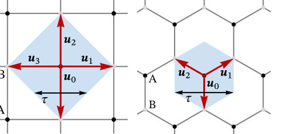
<figcaption class="paper-figure-caption"><b>Fig 1.</b> FIG. 1. Nearest-neighbor vectors 𝒖𝑏for the square (left) and honey- comb (right) lattices. In each case, the two sublattices, A and B, are labeled and the shaded polygon shows a unit cell containing one site of each sublattice. (For the square lattice, this is twice the area of the usual unit cell.) The black horizonal arrows show the distance 𝜏 between adjacent plaquette centers, given by 𝜏= |𝒖𝑏| for the square lattice and 𝜏= √</figcaption>
</figure>
<figure class="paper-figure-card">
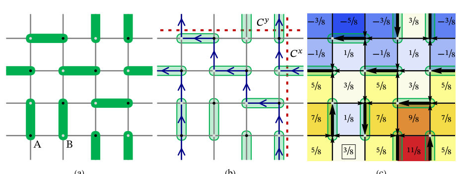
<figcaption class="paper-figure-caption"><b>Fig 2.</b> FIG. 2. (a) A configuration 𝑐of the dimer model on a 4 × 4 square lattice with periodic boundary conditions. The two sublattices, A and B, of the square lattice are labeled. (b) Corresponding directed-loop configuration (see Section III A), shown using blue arrowheads, constructed using the reference configuration 𝑐0 and directed Kasteleyn graph of Fig. 5. Edges appear on links for which the dimer occupation in 𝑐and 𝑐0 is not equal, with direction as in the graph. The dashed red lines show surfaces 𝐶𝑥and 𝐶𝑦that span the periodic boundaries (i.e., loops that wind around the handles of the torus), with normals taken in the positive Cartesian directions. (c) Configuration of flux density...</figcaption>
</figure>
<figure class="paper-figure-card">
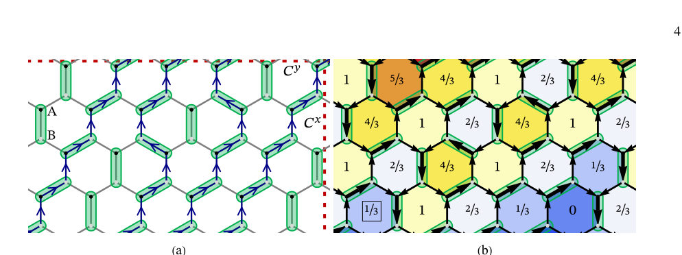
<figcaption class="paper-figure-caption"><b>Fig 3.</b> FIG. 3. (a) A configuration of the dimer model on the honeycomb lattice, with the corresponding directed-loop configuration (see Section III A) shown using blue arrowheads. The dashed red lines show the surfaces 𝐶𝑥and 𝐶𝑦, as in Fig. 2(b). (b) Configuration of flux density 𝐵𝓁(arrows) and height ℎ𝑝for 𝑐. Large and small arrows represent 𝐵𝓁= 2</figcaption>
</figure>
<figure class="paper-figure-card">
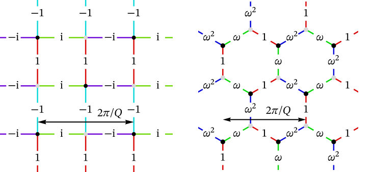
<figcaption class="paper-figure-caption"><b>Fig 4.</b> FIG. 4. Link phases 𝜗𝓁used to define the magnetization (VBS order parameter) for (a) the square lattice and (b) the honeycomb lattice, with 𝜔= e2𝜋i∕3. For both, the sublattice-A site at the bottom left is the origin. This pattern can be associated with a wavevector 𝑸= (𝑄, 0); the arrows show the corresponding spatial periods 2𝜋∕𝑄.</figcaption>
</figure>
<figure class="paper-figure-card">
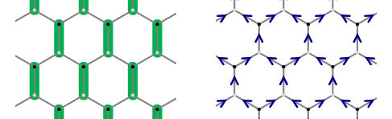
<figcaption class="paper-figure-caption"><b>Fig 5.</b> FIG. 5. Reference configuration 𝑐0 (left column) and corresponding directed Kasteleyn graph (right) on the square lattice (top row) and honeycomb lattice (bottom). Sublattices A and B are shown with black and light-gray points respectively, as labeled in Fig. 2(a) and 3(a). Lattice sites are vertices of the graph and each link gives a sin- gle directed edge. For links that are unoccupied in the reference con- figuration, the edge is directed from sublattice A to sublattice B. For links that are occupied, the edge is reversed. The loop configuration for a given dimer configuration 𝑐, such as shown Fig. 2(b) and 3(a), is given by the subset of the edges where 𝑐and 𝑐0 differ.</figcaption>
</figure>
</div>

<p><strong>Summary.</strong> The paper derives the height field theory for the 2D dimer model by mapping its partition function onto an exact Grassmann integral. Using bosonization techniques, it shows that this lattice problem maps precisely to a continuum description governed by a massless Dirac fermion, yielding explicit results for correlation functions in terms of the height field.</p>
<p><strong>Why it may be interesting.</strong> This work provides a rigorous quantum field theoretic derivation connecting a classical statistical mechanics model (dimers) to a fundamental continuum description (height field), which is highly relevant for understanding critical phenomena in 2D systems.</p>
<details>
<summary>Detailed structure</summary>
<p><strong>Main problem.</strong> The primary goal is to derive a continuum height field theory for the two-dimensional classical dimer model by starting from an exact Grassmann-integral representation of its partition function.</p>
<p><strong>Main result.</strong> The derivation successfully maps the lattice physics onto a massless Dirac fermion, which via bosonization yields the known height field theory, providing explicit expressions for dimer observables in terms of the continuum height field.</p>
<p><strong>Method.</strong> The methodology involves using an exact Grassmann-integral representation, taking the continuum limit by expanding lattice variables into slowly varying fields, and employing bosonization techniques to relate fermionic determinants to bosonic correlation functions.</p>
<p><strong>Model / system.</strong> The system is the classical dimer model on bipartite lattices (e.g., square or honeycomb). The partition function sums over all close-packed configurations of dimers, which are characterized by local flux densities ($\mathbf{B}_\ell$) and a valence-bond-solid order parameter ($\Psi_i$).</p>
<p><strong>Key observables.</strong> Dimer correlation functions $\langle d_{\ell_1}d_{\ell_2} \cdots d_{\ell_n}
angle$, the continuum height field $h(\mathbf{r})$, and related bosonic/fermionic correlators ($\Gamma(\mathbf{r})$).</p>
<p><strong>Important parameters / regimes.</strong> The analysis is restricted to 2D bipartite lattices, and the derivation relies on assuming that source terms (like $\mathbf{a}$ and $M$) are slowly varying in the continuum limit.</p>
<p><strong>Assumptions / limitations.</strong> The key assumptions involve taking the continuum limit for lattice variables ($\mathbf{a}_{ib} \propto \partial_\mu a$), relating dimer sums to Grassmann determinants, and assuming that only specific source terms (flux and VBS order) contribute to asymptotic correlations.</p>
<p><strong>Figures summary.</strong> Figures illustrate the lattice structures (square/honeycomb), mapping dimer configurations to directed-loop patterns, and visualizing the resulting height field contours ($h_p$).</p>
<p><strong>Paper structure.</strong> The paper proceeds by establishing the Grassmann integral representation for the partition function, performing a continuum limit expansion using slowly varying fields ($\mathbf{a}, M$), relating this determinant structure to bosonic correlation functions via bosonization, and finally deriving the explicit form of the height field theory.</p>
</details>
<details>
<summary>Abstract</summary>
<p>The classical dimer model on bipartite lattices hosts a Coulomb phase, characterized by algebraic correlations and topological order. Its long-wavelength properties can be described by the fluctuations of a vector field with zero divergence, which, in two dimensions, is equivalent to a continuum height model. We show how this field theory can be derived constructively for both square and honeycomb lattices, starting from an exact representation of the dimer model in terms of Grassmann integrals. Taking the continuum limit gives a massless Dirac fermion in two-dimensional Euclidean space, which, using bosonization in the path integral representation, maps exactly to the well-known height field theory, incorporating the relationship between its boundary discontinuity (or "tilt") and the flux. By including source terms coupling to the flux density and the local valence-bond-solid order parameter, which we show are the only ones required to describe the asymptotic long-distance correlations, we derive expressions for the dimer observables in terms of the height.</p>
</details>
<p><sub><a href="#top">↑ back to top</a></sub></p>

<p><a id="paper-2606.17956"></a></p>
<h3 id="fabless-quantum-chip-design-and-commercial-production"><a href="http://arxiv.org/abs/2606.17956v1">Fabless Quantum Chip Design and Commercial Production</a></h3>
<p><strong>Authors:</strong> Cai, Ling Qiao, Bin Yang, Fumin Luo, WeiGui Guo, GuoRong Zhang, XueFei Liu, Qinglang Guo, Bin Wu<br>
<strong>Type:</strong> theory · <strong>Category:</strong> quantum information and computing · <strong>PDF:</strong> <a href="https://arxiv.org/pdf/2606.17956v1">https://arxiv.org/pdf/2606.17956v1</a><br>
<strong>Analysis basis:</strong> full PDF text, analyzed in chunks
<strong>Topic relevance:</strong> <code>QC/QI experiment</code> <strong>1/5</strong></p>
<div class="figure-strip-hint">↔ Scroll figures horizontally</div>
<div class="paper-figures-scroll">
<figure class="paper-figure-card">
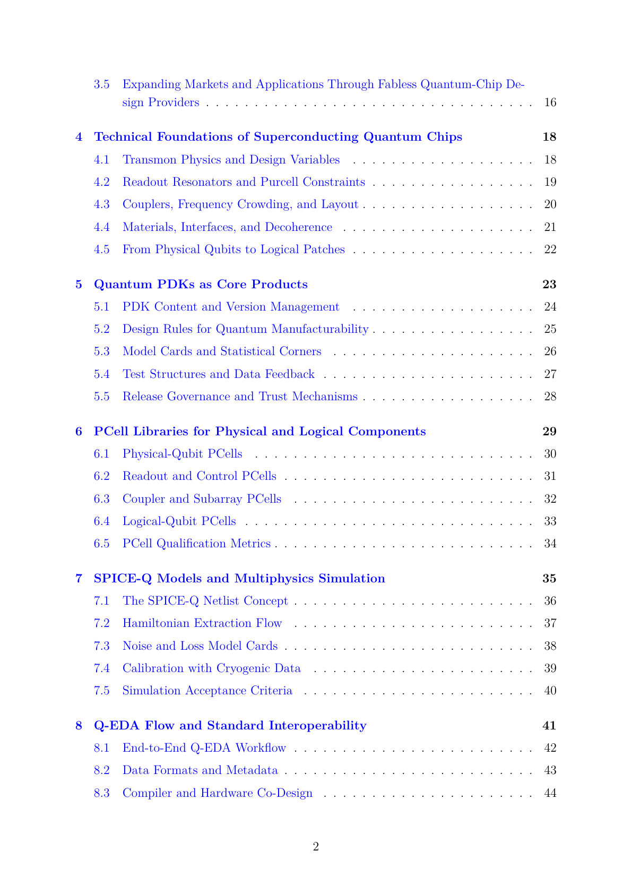
<figcaption class="paper-figure-caption"><b>Fig 1.</b> Low-resolution page preview, page 2</figcaption>
</figure>
<figure class="paper-figure-card">
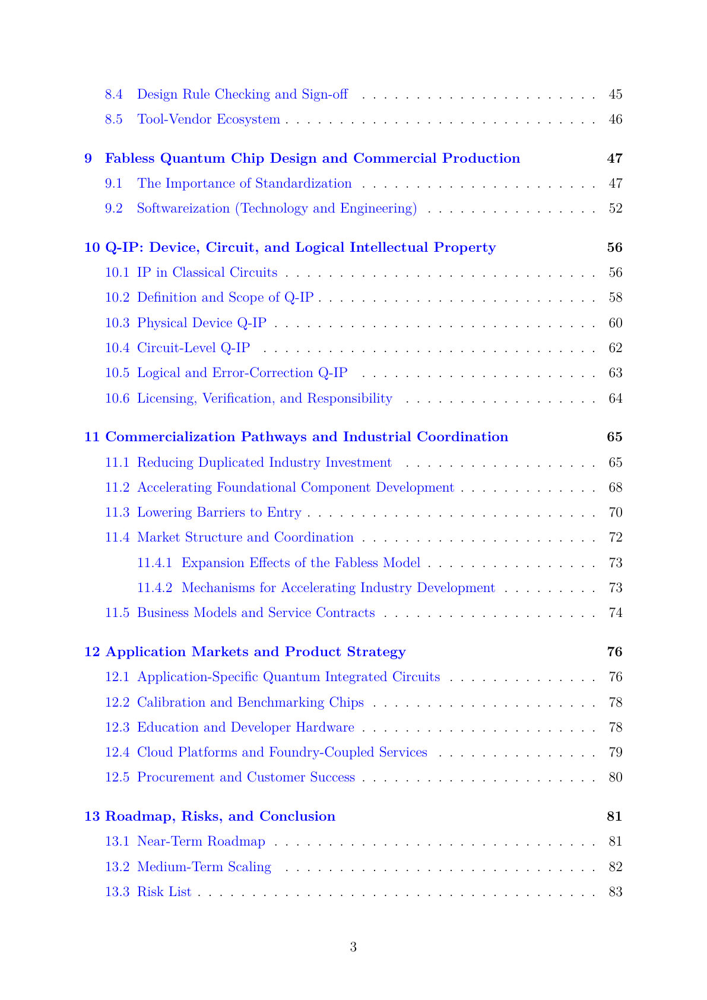
<figcaption class="paper-figure-caption"><b>Fig 2.</b> Low-resolution page preview, page 3</figcaption>
</figure>
<figure class="paper-figure-card">
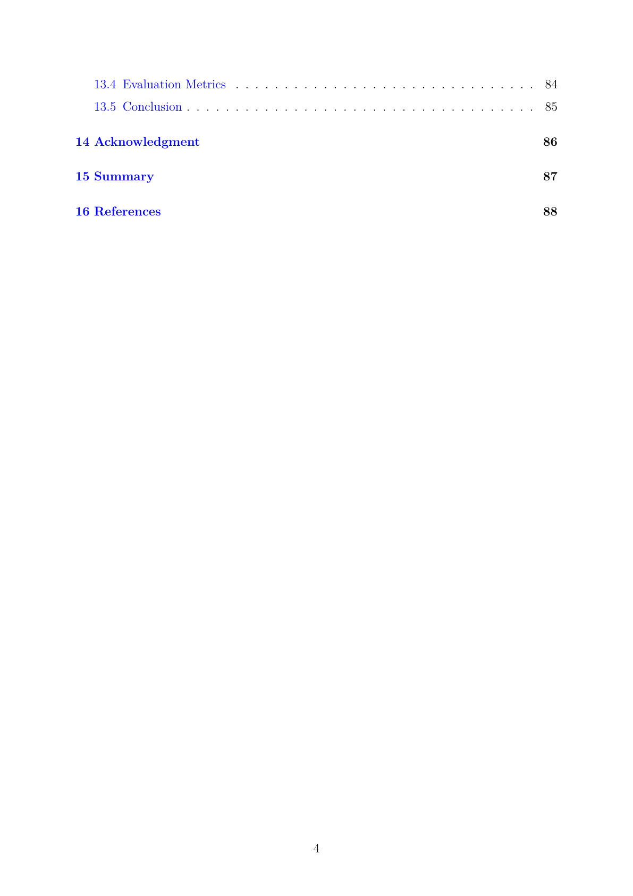
<figcaption class="paper-figure-caption"><b>Fig 3.</b> Low-resolution page preview, page 4</figcaption>
</figure>
<figure class="paper-figure-card">
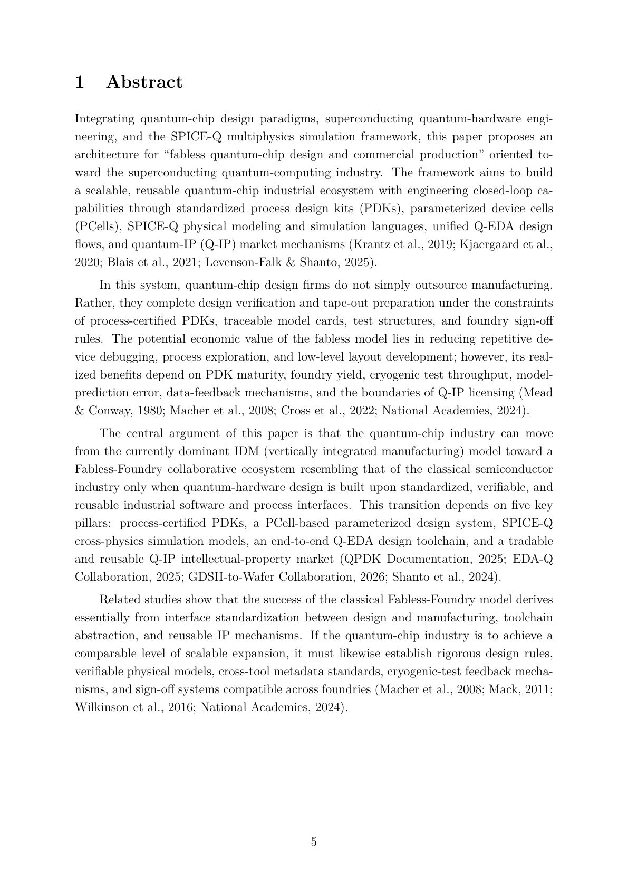
<figcaption class="paper-figure-caption"><b>Fig 4.</b> Low-resolution page preview, page 5</figcaption>
</figure>
<figure class="paper-figure-card">
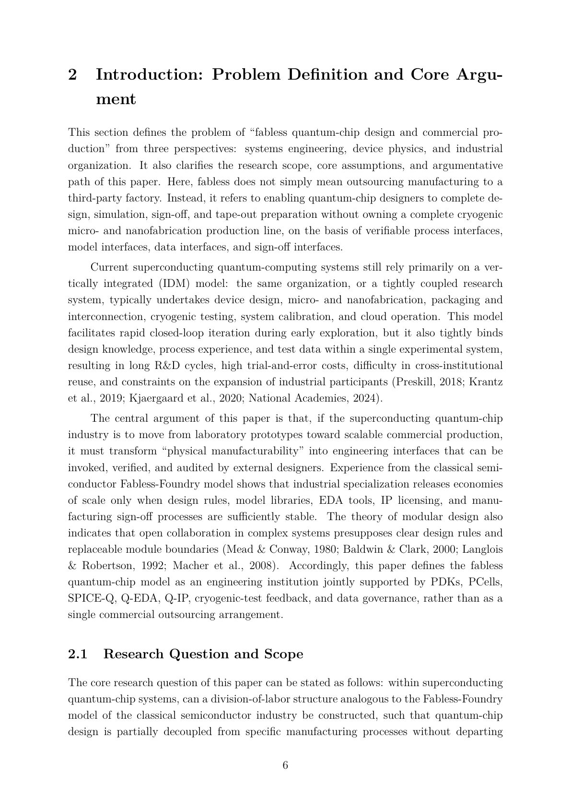
<figcaption class="paper-figure-caption"><b>Fig 5.</b> Low-resolution page preview, page 6</figcaption>
</figure>
</div>

<p><strong>Summary.</strong> This paper outlines a comprehensive fabless architecture necessary to commercialize superconducting quantum chips by mimicking the successful model of the classical semiconductor industry. It argues that moving beyond lab prototypes requires standardizing design through five key pillars: PDKs, parameterized cells, multiphysics simulation (SPICE-Q), automated EDA flows, and an IP market. Ultimately, it defines a path toward scalable, manufacturable quantum hardware by treating physical complexity as a set of verifiable software interfaces.</p>
<p><strong>Why it may be interesting.</strong> It provides a crucial engineering roadmap, framing quantum hardware development not just as a physics problem but as an industrial systems integration challenge that requires rigorous standardization analogous to mature classical semiconductor flows.</p>
<details>
<summary>Detailed structure</summary>
<p><strong>Main problem.</strong> The paper addresses the challenge of transitioning superconducting quantum chip development from a laboratory-based, vertically integrated model to a scalable, standardized fabless-foundry industrial ecosystem.</p>
<p><strong>Main result.</strong> Scalability requires establishing five key pillars—PDKs, PCells, SPICE-Q simulation, Q-EDA automation, and a Q-IP market—to create verifiable, reusable software and process interfaces.</p>
<p><strong>Method.</strong> The authors propose an architectural framework by drawing analogies from the classical semiconductor industry to define necessary industrial standards for quantum hardware design flow.</p>
<p><strong>Model / system.</strong> The physical system is superconducting quantum chips (e.g., Transmons). The model involves a complex, multi-physics Hamiltonian ($H_{SPICE-Q}$) whose performance depends on coupling geometry, material loss, and packaging constraints.</p>
<p><strong>Key observables.</strong> Logical error rate, Q-IP reuse rate, cross-foundry process consistency, and the overall system validation maturity ($V_{	ext{validation}}$).</p>
<p><strong>Important parameters / regimes.</strong> PDK maturity, foundry yield, cryogenic test throughput, and the boundaries of Quantum Intellectual Property (Q-IP) licensing.</p>
<p><strong>Assumptions / limitations.</strong> The transition assumes that establishing rigorous, standardized interfaces can overcome the inherent physical complexity and non-ideal nature of quantum devices, allowing for 'constrained decoupling' from full process ownership.</p>
<p><strong>Paper structure.</strong> The paper progresses by first identifying the limitations of the current IDM model, then proposing a multi-pillar fabless architecture (PDKs $
ightarrow$ PCells $
ightarrow$ SPICE-Q $
ightarrow$ Q-EDA $
ightarrow$ Q-IP), and finally detailing the required continuous closed-loop feedback mechanisms for industrial maturity.</p>
</details>
<details>
<summary>Abstract</summary>
<p>This paper proposes a fabless quantum-chip design and production architecture for superconducting quantum computing, centered on the SPICE-Q multiphysics simulation framework. The proposed ecosystem connects process-certified quantum PDKs, parameterized device cells, traceable model cards, SPICE-Q physical modeling languages, unified Q-EDA flows, foundry sign-off rules, cryogenic test feedback, and reusable quantum IP. In this model, design firms do not merely outsource fabrication; they prepare verified tape-outs under standardized process constraints and calibrated physical models. Its economic value lies in reducing repetitive device debugging, process exploration, and low-level layout effort, while its feasibility depends on PDK maturity, foundry yield, cryogenic test throughput, model-prediction accuracy, data-feedback mechanisms, and IP licensing boundaries. We argue that superconducting quantum chips can move from the current largely vertically integrated development model toward a fabless-foundry ecosystem only when hardware design is supported by standardized, verifiable, and reusable software and process interfaces. The required pillars are certified PDKs, PCell-based parameterized design, SPICE-Q cross-physics simulation, end-to-end Q-EDA automation, and a tradable quantum-IP market. By adapting lessons from the classical semiconductor industry to quantum hardware, this framework defines a path toward scalable, manufacturable, and commercially reusable superconducting quantum-chip design.</p>
</details>
<p><sub><a href="#top">↑ back to top</a></sub></p>

<p><a id="paper-2606.18169"></a></p>
<h3 id="optimal-probe-state-for-phase-estimation-under-covariant-measurement"><a href="http://arxiv.org/abs/2606.18169v1">Optimal Probe State for Phase Estimation Under Covariant Measurement</a></h3>
<p><strong>Authors:</strong> Qipeng Qian, Christos N. Gagatsos<br>
<strong>Type:</strong> theory · <strong>Category:</strong> quantum information and computing · <strong>PDF:</strong> <a href="https://arxiv.org/pdf/2606.18169v1">https://arxiv.org/pdf/2606.18169v1</a><br>
<strong>Analysis basis:</strong> full PDF text, analyzed in chunks
<strong>Topic relevance:</strong> <code>quantum measurements</code> <strong>1/5</strong></p>
<div class="figure-strip-hint">↔ Scroll figures horizontally</div>
<div class="paper-figures-scroll">
<figure class="paper-figure-card">
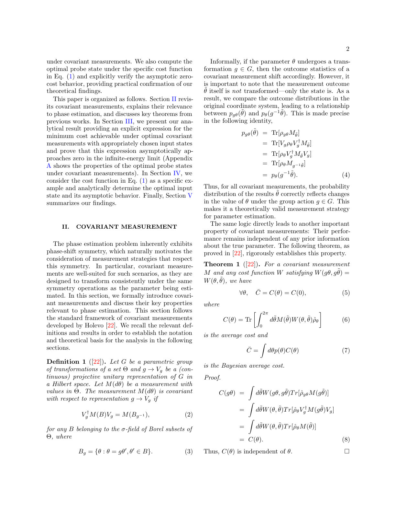
<figcaption class="paper-figure-caption"><b>Fig 1.</b> Low-resolution page preview, page 2</figcaption>
</figure>
<figure class="paper-figure-card">
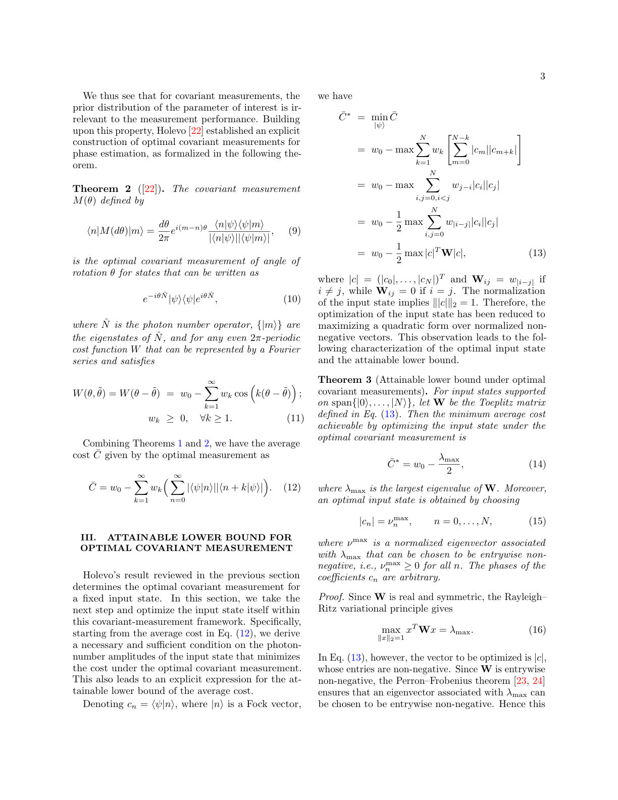
<figcaption class="paper-figure-caption"><b>Fig 2.</b> Low-resolution page preview, page 3</figcaption>
</figure>
<figure class="paper-figure-card">
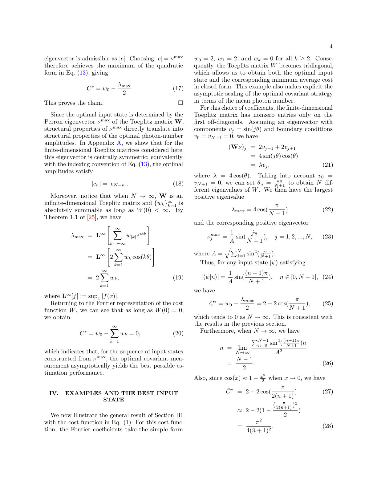
<figcaption class="paper-figure-caption"><b>Fig 3.</b> Low-resolution page preview, page 4</figcaption>
</figure>
<figure class="paper-figure-card">
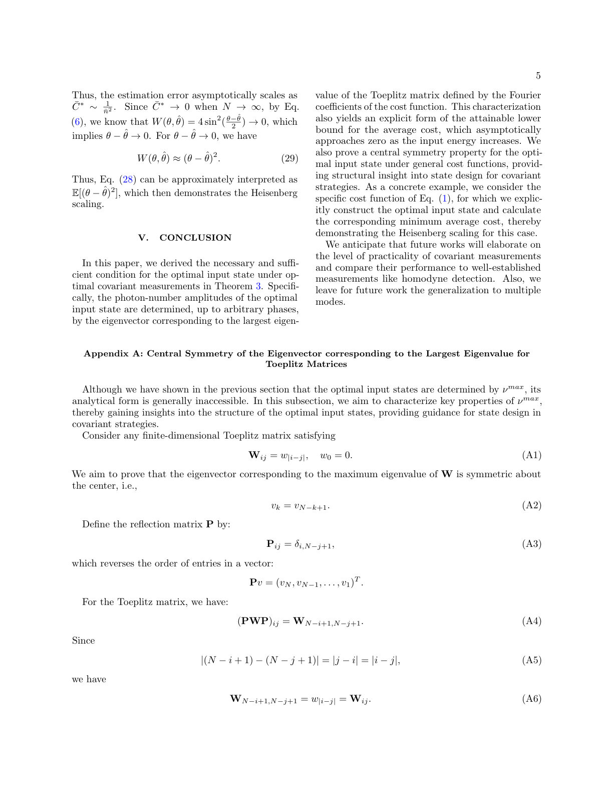
<figcaption class="paper-figure-caption"><b>Fig 4.</b> Low-resolution page preview, page 5</figcaption>
</figure>
<figure class="paper-figure-card">
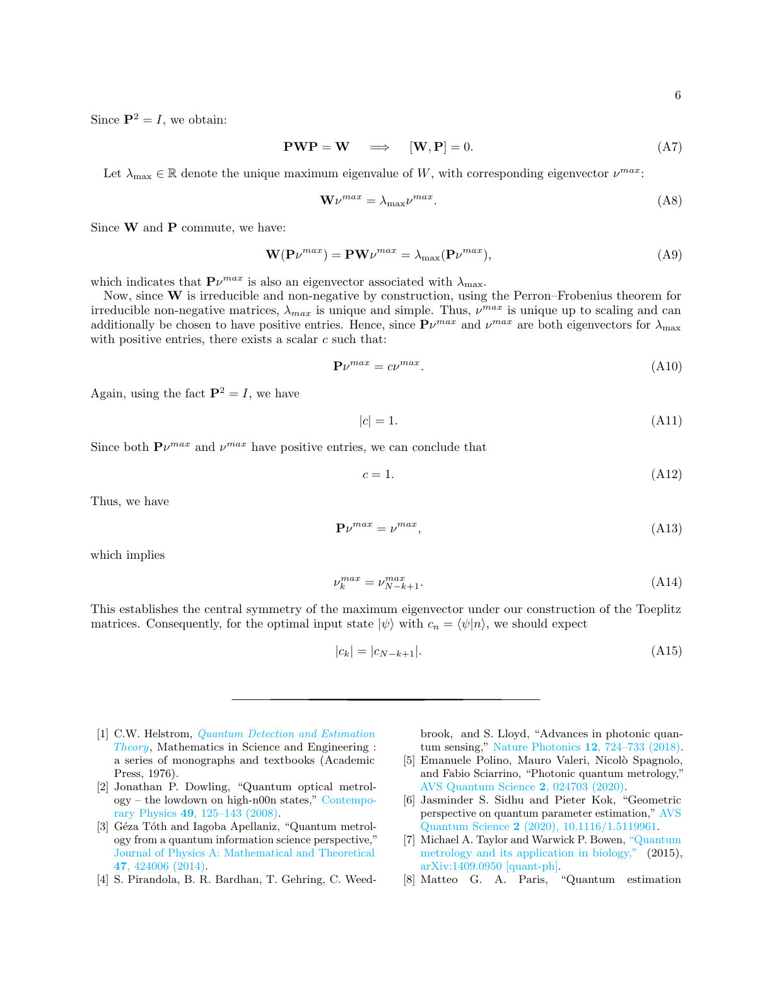
<figcaption class="paper-figure-caption"><b>Fig 5.</b> Low-resolution page preview, page 6</figcaption>
</figure>
</div>

<p><strong>Summary.</strong> This paper develops a method to find the best possible input quantum state for estimating an unknown phase shift under covariant measurement constraints. By reformulating the problem as maximizing a quadratic form involving Toeplitz matrices derived from the cost function, the authors derive explicit formulas for the minimum achievable error bound. The results confirm Heisenberg scaling in specific cases, advancing the theory of quantum metrology.</p>
<p><strong>Why it may be interesting.</strong> This work provides fundamental theoretical tools for quantum metrology, specifically characterizing the ultimate limits of precision achievable in phase estimation by optimizing the resource state itself, which is crucial for designing practical quantum sensors.</p>
<details>
<summary>Detailed structure</summary>
<p><strong>Main problem.</strong> The paper aims to optimize the input quantum state $|\psi
angle$ used for phase estimation when measurements are restricted to covariant types.</p>
<p><strong>Main result.</strong> The optimal input state coefficients are determined by the eigenvector corresponding to the largest eigenvalue of a Toeplitz matrix derived from the cost function. This leads to an explicit lower bound on the average estimation cost, which can achieve Heisenberg scaling in certain limits.</p>
<p><strong>Method.</strong> The authors optimize the average cost functional over all possible input states, reducing the problem to maximizing a quadratic form involving the Fourier coefficients of the cost function using techniques related to Toeplitz matrices and variational principles.</p>
<p><strong>Model / system.</strong> The system models single-mode quantum phase estimation ($   heta$) where the measurement process is constrained to be covariant. The analysis uses the Fock coefficients ($c_n = \langle\psi|n
angle$) of the input state $|\psi
angle$ and a cost function $W(	heta, 	ilde{	heta})$.</p>
<p><strong>Key observables.</strong> The minimum average estimation cost ($ar{C}^*$), the optimal input state amplitudes ($|c_n|$), and the largest eigenvalue ($\lambda_{\max}$) of the associated Toeplitz matrix.</p>
<p><strong>Important parameters / regimes.</strong> The mean photon number (related to energy scaling), the structure of the even, $2\pi$-periodic cost function $W(	heta, 	ilde{	heta})$, and the asymptotic limit ($N 	o \infty$).</p>
<p><strong>Assumptions / limitations.</strong> The analysis assumes the measurement is covariant and that the cost function has non-negative Fourier coefficients. The derivation relies on Holevo's framework for optimal measurements given a fixed state.</p>
<p><strong>Figures summary.</strong> Not specified in the notes, but the results concern explicit formulas for $ar{C}^*$ and the structure of the optimal state vector derived from matrix properties.</p>
<p><strong>Paper structure.</strong> The paper builds upon Holevo's result by optimizing over the input state. It derives necessary and sufficient conditions using quadratic forms related to Toeplitz matrices, establishes the relationship between the minimum cost and $\lambda_{\max}$, and concludes with explicit calculations for a specific sinusoidal cost function.</p>
</details>
<details>
<summary>Abstract</summary>
<p>We study the optimization of input states for phase estimation under covariant measurements. Building on Holevo's framework, which provides the optimal covariant measurement for a fixed input state, we further optimize over the input state itself. For a general even $2π$-periodic cost function with non-negative Fourier coefficients, we derive a necessary and sufficient condition for the optimal input state: Its Fock coefficients are determined, up to arbitrary phases, by the eigenvector corresponding to the largest eigenvalue of a Toeplitz matrix defined by the cost function. This characterization yields an explicit expression for the attainable lower bound of the average cost under optimal covariant measurements and shows that this bound asymptotically approaches zero in the infinite-energy limit. For the specific cost function $W(θ,\tildeθ)=4\sin^2[(θ-\tildeθ)/2]$, we obtain the optimal input state and the corresponding minimum average cost in closed form, demonstrating Heisenberg scaling with respect to the mean photon number.</p>
</details>
<p><sub><a href="#top">↑ back to top</a></sub></p>

<p><a id="paper-2606.17663"></a></p>
<h3 id="probing-la-based-nickelates-with-ni-1math986math-core-level-photoelectron-spectroscopy"><a href="http://arxiv.org/abs/2606.17663v1">Probing La-based nickelates with Ni 1$s$ core-level photoelectron spectroscopy</a></h3>
<p><strong>Authors:</strong> Daisuke Takegami, Naoki Ito, Koto Fujinuma, Masato Yoshimura, Grace A. Pan, Dan Ferenc Segedin, Qi Song, Hanjong Paik, Charles M. Brooks, Hanjie Guo, Alexander C. Komarek, Takanori Taniguchi, Masaki Fujita, Julia A. Mundy, Takashi Mizokawa, Liu Hao Tjeng, Berit H. Goodge, Atsushi Hariki<br>
<strong>Type:</strong> both · <strong>Category:</strong> strongly correlated electrons · <strong>PDF:</strong> <a href="https://arxiv.org/pdf/2606.17663v1">https://arxiv.org/pdf/2606.17663v1</a><br>
<strong>Analysis basis:</strong> full PDF text, analyzed in chunks
<strong>Topic relevance:</strong> <code>Keldysh / 2PI / non-Gaussian methods</code> <strong>1/5</strong></p>
<div class="figure-strip-hint">↔ Scroll figures horizontally</div>
<div class="paper-figures-scroll">
<figure class="paper-figure-card">
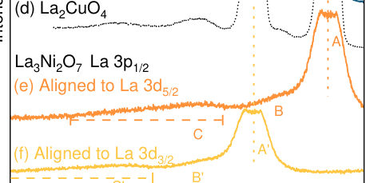
<figcaption class="paper-figure-caption"><b>Fig 1.</b> FIG. 1. (a) Ni 2p core level spectra of Nd3Ni2O7 [13]. (b,c) Overlapping Ni 2p and La 3d core level spectra of (b) La3Ni2O7 and (c) LaNiO3. (d) La 3d core level spectra of La2CuO4. (e,f) La 3p1/2 spectra of La3Ni2O7 shifted to match the centre of the (e) La 3d5/2 and (f) La 3d3/2 to illustrate the overlap of La-derived satellite features in the Ni 2p region. The binding energies of the spectra have been shifted by (a- d) 833 eV, (e) 1205 eV and (f) 1222 eV in order to show the comparison in relative energy.</figcaption>
</figure>
<figure class="paper-figure-card">
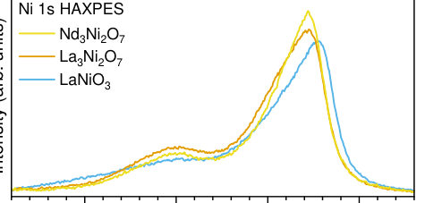
<figcaption class="paper-figure-caption"><b>Fig 2.</b> FIG. 3. Ni 1s core-level spectra of Nd3Ni2O7 (yellow line), La3Ni2O7 (orange line), and LaNiO3 (blue line).</figcaption>
</figure>
<figure class="paper-figure-card">
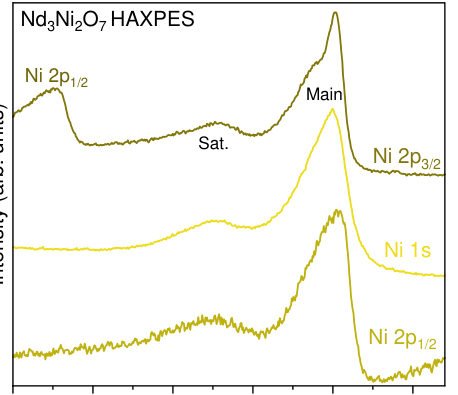
<figcaption class="paper-figure-caption"><b>Fig 3.</b> FIG. 2. Comparison of the Ni 1s core level spectra with the Ni 2p3/2 and/or Ni 2p1/2 for Nd3Ni2O7. The binding energies of the spectra have been shifted by 8332.78 eV (Ni 1s) , 871.8 eV (Ni 2p1/2), and 854.1 eV (Ni 2p3/2).</figcaption>
</figure>
<figure class="paper-figure-card">
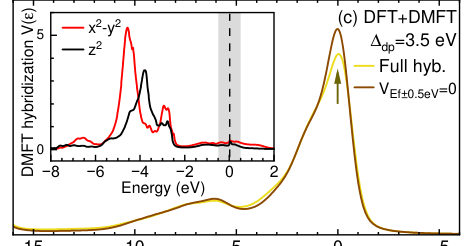
<figcaption class="paper-figure-caption"><b>Fig 4.</b> FIG. 4. (a) DFT+DMFT calculations of the Ni core-level (2p) spectra of Nd3Ni2O7 for different CT energies ∆dp, as discussed in Ref. 13. (b) Spectra calculated for ∆dp = 3.5 eV with hybridization densities uniformly scaled over the entire energy range to 95% (orange) and 90% (red) of the origi- nal value (yellow). The original hybridization density V (ε) for ∆dp = 3.5 eV is shown in the inset of panel (c). The hybridization densities V (ε) for different ∆dp are provided in Ref. 13. (c) Spectra calculated using a modified hybridization density V (ε) in which the hybridization amplitude within the energy window EF ± 0.5 eV (shaded area in the inset) is ar- tificially set to zero. The original...</figcaption>
</figure>
</div>

<p><strong>Summary.</strong> This work compares Ni 1s and Ni 2p photoelectron spectra across various La-based nickelates to probe their electronic structure. The authors argue that the deeper Ni 1s core level offers a clearer view of intrinsic correlations by avoiding spectral overlaps present in the more commonly used Ni 2p measurement. By combining experiment with DFT+DMFT calculations, they successfully map material differences onto changes in fundamental electronic parameters.</p>
<p><strong>Why it may be interesting.</strong> The detailed spectroscopic analysis of strongly correlated nickelates using core-level photoemission spectroscopy provides direct experimental constraints on the effective Hamiltonians and correlation strengths used in theoretical models like DMFT, which is highly relevant to understanding high-Tc superconductivity mechanisms.</p>
<details>
<summary>Detailed structure</summary>
<p><strong>Main problem.</strong> The study addresses the challenge of accurately determining the electronic structure of La-based nickelates by comparing core-level photoemission spectra from different Ni core levels.</p>
<p><strong>Main result.</strong> The deep Ni 1s core level provides a cleaner view of intrinsic electronic excitations compared to the Ni 2p level, which suffers from spectral overlap with the La 3d states. This allows for distinguishing material variations within the Ruddlesden-Popper series.</p>
<p><strong>Method.</strong> The research combines experimental Hard X-ray Photoelectron Spectroscopy (HAXPES) measurements with theoretical calculations using Density Functional Theory combined with Dynamical Mean-Field Theory (DFT+DMFT).</p>
<p><strong>Model / system.</strong> The physical system is the Ruddlesden-Popper series of nickelates, including La3Ni2O7, Nd3Ni2O7, and LaNiO3. The analysis focuses on the electronic correlation effects within these layered perovskite structures.</p>
<p><strong>Key observables.</strong> Core-level binding energies (Ni 1s vs Ni 2p), spectral line shapes, satellite features, and intensity ratios.</p>
<p><strong>Important parameters / regimes.</strong> Charge transfer energy ($\Delta_{dp}$), hybridization strength ($V(\epsilon)$), and the specific stoichiometry of the nickelate layers.</p>
<p><strong>Assumptions / limitations.</strong> The analysis assumes that the Ni 1s spectrum is less contaminated by neighboring orbitals compared to the Ni 2p spectrum, allowing it to probe intrinsic electronic correlations.</p>
<p><strong>Figures summary.</strong> Figures compare Ni 1s and Ni 2p spectra across different nickelates (e.g., Nd3Ni2O7 vs La3Ni2O7), demonstrating spectral overlaps in Ni 2p and showing material-dependent variations in the cleaner Ni 1s spectrum.</p>
<p><strong>Paper structure.</strong> The paper progresses by first identifying the spectroscopic limitations of the Ni 2p level due to overlap, then presenting evidence from Ni 1s measurements that it is a viable alternative. Finally, theoretical calculations are used to model how changes in electronic parameters ($\Delta_{dp}$, hybridization) account for observed spectral differences between related compounds.</p>
</details>
<details>
<summary>Abstract</summary>
<p>We present a comparative Ni core level photoemission study of La$_3$Ni$_2$O$_7$, Nd$_3$Ni$_2$O$_7$, and LaNiO$_3$ using both the Ni $2p$ and the Ni $1s$. We address the challenges in analyzing the widely investigated Ni $2p$ spectra arising from the substantial overlap in energy of the Ni $2p$ with the La $3d$. We show that on the other hand the deep Ni $1s$ core level does provide a clean view on the intrinsic electronic excitations and we highlight its potential to resolve detailed differences in the electronic structure within the strongly correlated Ruddlesden-Popper series La$_{n+1}$Ni$_n$O$_{3n+1}$.</p>
</details>
<p><sub><a href="#top">↑ back to top</a></sub></p>

<p><a id="paper-2606.17852"></a></p>
<h3 id="split-head-quantum-generative-adversarial-network-for-crystalline-material-discovery"><a href="http://arxiv.org/abs/2606.17852v1">Split-Head Quantum Generative Adversarial Network for Crystalline Material Discovery</a></h3>
<p><strong>Authors:</strong> Huan-Ming Chang, Jen-Yu Chang, Tsung-Wei Huang, En-Jui Kuo<br>
<strong>Type:</strong> theory · <strong>Category:</strong> disordered systems and neural networks · <strong>PDF:</strong> <a href="https://arxiv.org/pdf/2606.17852v1">https://arxiv.org/pdf/2606.17852v1</a><br>
<strong>Analysis basis:</strong> full PDF text, analyzed in chunks
<strong>Topic relevance:</strong> <code>methods for driven-dissipative</code> <strong>1/5</strong></p>
<div class="figure-strip-hint">↔ Scroll figures horizontally</div>
<div class="paper-figures-scroll">
<figure class="paper-figure-card">
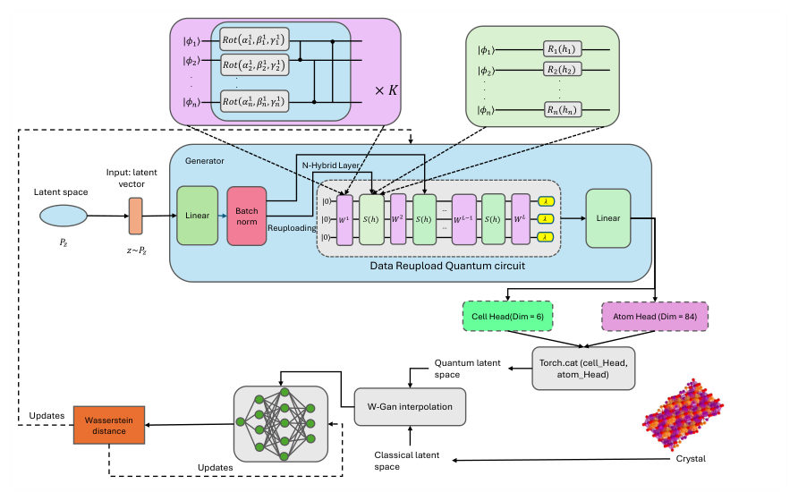
<figcaption class="paper-figure-caption"><b>Fig 1.</b> Fig. 1. Comprehensive operational schematic of the SH-QGAN framework. The diagram illustrates the data re-uploading sequence of the latent vector z, the internal topology of the parameterized quantum circuit (highlighting rotation gates and entanglement layers), and the physical bifurcation of the resultant expectation values into the independent Cell and Atom decoding heads before final Wasserstein evaluation.</figcaption>
</figure>
<figure class="paper-figure-card">
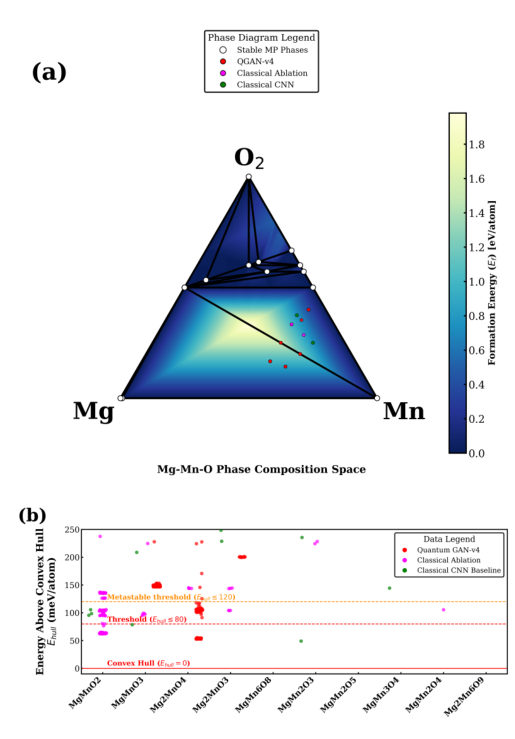
<figcaption class="paper-figure-caption"><b>Fig 2.</b> Fig. 2. Thermodynamic evaluation of generative models. Top (Figure 2.a): Ternary phase diagram of the Mg-Mn-O composition space. The background color gradient indicates absolute Formation Energy (Ef) in eV/atom. White dots denote stable baseline phases defining the true Convex Hull. Red, purple, and green dots represent structures generated by the QGAN-v4, Classical Ablation, and Classical CNN, respectively. Bottom (Figure 2.b): Energy Above Convex Hull (Ehull) stability distribution. The solid red line designates perfect stability (Ehull = 0), while the boundaries at 0.08 eV/atom and 0.12 eV/atom denote the metastable threshold and observation limit. The QGAN- v4 discoveries (red) cluster...</figcaption>
</figure>
<figure class="paper-figure-card">
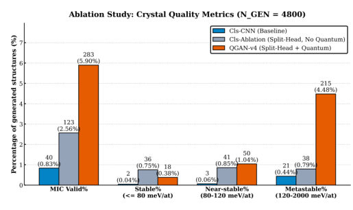
<figcaption class="paper-figure-caption"><b>Fig 3.</b> Fig. 3. Three-Way Ablation Benchmark Bar Chart visualizing the hit-rate percentage across MIC-Valid, Stable, Near-stable, and Metastable outputs for the generative models. The massive delta between the QGAN-v4 and classical models provides definitive mathematical proof justifying the quantum topology.</figcaption>
</figure>
<figure class="paper-figure-card">
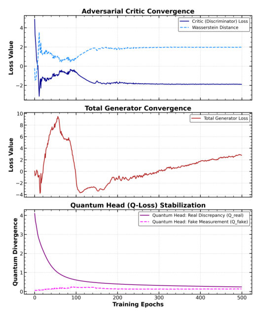
<figcaption class="paper-figure-caption"><b>Fig 4.</b> Fig. 4. Training loss convergence of the SH-QGAN over 500 epochs. Top: Adversarial Critic convergence showing the stabilization of the Wasserstein distance. Middle: Total Generator convergence maintaining active gradients. Bottom: Quantum Head (Q-Loss) stabilization, indicating the model success- fully minimizes compositional discrepancy.</figcaption>
</figure>
<figure class="paper-figure-card">
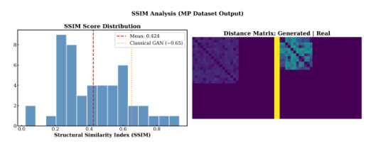
<figcaption class="paper-figure-caption"><b>Fig 5.</b> Fig. 5. Structural Similarity Index Measure (SSIM) analysis confirming true generation versus dataset memorization. The distribution highlights a low mean similarity score (0.483), proving the SH-QGAN invents novel topologies rather than copying training references.</figcaption>
</figure>
</div>

<p><strong>Summary.</strong> This paper introduces a Split-Head Quantum GAN (SH-QGAN) to accelerate the discovery of novel crystalline materials. By separating the prediction of global lattice parameters from local atomic coordinates, the model leverages quantum circuits to achieve unparalleled structural diversity while maintaining high thermodynamic precision. The results demonstrate that combining quantum feature mapping with physics-informed architectural priors is a powerful paradigm for generative materials science.</p>
<p><strong>Why it may be interesting.</strong> While focused on condensed matter structure generation, the core methodology—using quantum circuits to enhance generative sampling in high-dimensional physical spaces—is highly relevant for developing ML models that respect underlying physical symmetries and constraints.</p>
<details>
<summary>Detailed structure</summary>
<p><strong>Main problem.</strong> Discovering novel, stable crystalline materials is limited by classical generative models' inability to explore vast 3D chemical space without mode collapse.</p>
<p><strong>Main result.</strong> The SH-QGAN successfully generates structurally diverse candidates that exhibit superior thermodynamic stability and geometric validity compared to purely classical ablation models.</p>
<p><strong>Method.</strong> A physics-informed Split-Head Quantum GAN (SH-QGAN) is employed, which decouples lattice parameter prediction from atomic coordinate generation using quantum circuits for enhanced exploration.</p>
<p><strong>Model / system.</strong> The system studied is the Mg-Mn-O crystalline material space. The model uses an SH-QGAN architecture with a classical WGAN-GP discriminator to generate structures by predicting global cell parameters and local atomic coordinates separately.</p>
<p><strong>Key observables.</strong> Thermodynamic stability (Energy Above Convex Hull, E_hull), Topological Validity Rate, Structural Similarity Index Measure (SSIM), and electronic bandgap (3.07 eV for the candidate).</p>
<p><strong>Important parameters / regimes.</strong> The model is evaluated on a constrained core dataset of Mg-Mn-O structures; training involves specific learning rates and micro-batch sizes.</p>
<p><strong>Assumptions / limitations.</strong> The primary assumption is that decoupling lattice bounds from atomic coordinates (Split-Head) allows the quantum circuit to independently provide necessary spatial diversity beyond classical architectural constraints.</p>
<p><strong>Figures summary.</strong> Figures illustrate the SH-QGAN schematic, loss convergence over epochs, structural hit-rate comparisons against ablation models, and electronic band structures confirming insulating properties for generated candidates.</p>
<p><strong>Paper structure.</strong> The paper introduces the problem of generative materials discovery, details the SH-QGAN architecture (decoupling heads), presents training methodologies using WGAN-GP, evaluates performance by comparing it to a classical ablation model, and concludes with DFT validation of top candidates.</p>
</details>
<details>
<summary>Abstract</summary>
<p>The discovery of novel crystalline materials is a critical challenge in computational materials science, often limited by the spatial representation limitations and mode collapse typical of classical generative models. Traditionally, developing Quantum GANs for continuous 3D space is hindered by the limited capacity of near-term hardware. To overcome this, we adapt a physics-informed "split-head" architecture right from the quantum trunk to explicitly decouple macroscopic lattice bounds from microscopic atomic coordinates, significantly maximizing resource efficiency. This study disentangles the contributions of quantum circuits from these architectural priors by evaluating a Split-Head Quantum Generative Adversarial Network against an architecture-matched classical ablation model. Evaluated on the highly constrained Mg-Mn-O system, the results reveal a highly nuanced performance dichotomy between the advanced models. The architecture-matched classical ablation model demonstrated superior thermodynamic precision. Conversely, the integration of quantum circuits in the SH-QGAN drove unparalleled structural breadth and latent space exploration, more than doubling the ablation's geometric validity and successfully generating novel, metastable candidates converging on the Mg2MnO4 stoichiometry. These findings clarify that while architectural separation of cell and atom generation drives strict thermodynamic precision, quantum feature mapping independently provides the spatial diversity necessary to overcome mode collapse. Both mechanisms offer distinct, complementary enhancements for the generative discovery of advanced materials.</p>
</details>
<p><sub><a href="#top">↑ back to top</a></sub></p>
<h2 id="other-papers-8">Other papers (8)</h2>
<p><em>Papers from primary archives without highlighted authors or any topic match. Click to expand.</em></p>
<details>
<summary>Show other papers</summary>

<p><a id="paper-2606.18035"></a></p>
<h3 id="approximately-decoding-the-colour-code"><a href="http://arxiv.org/abs/2606.18035v1">Approximately Decoding the Colour Code</a></h3>
<p><strong>Authors:</strong> Mark Walters<br>
<strong>Type:</strong> theory · <strong>Category:</strong> quantum information and computing · <strong>PDF:</strong> <a href="https://arxiv.org/pdf/2606.18035v1">https://arxiv.org/pdf/2606.18035v1</a><br>
<strong>Analysis basis:</strong> full PDF text, analyzed in chunks</p>
<div class="figure-strip-hint">↔ Scroll figures horizontally</div>
<div class="paper-figures-scroll">
<figure class="paper-figure-card">
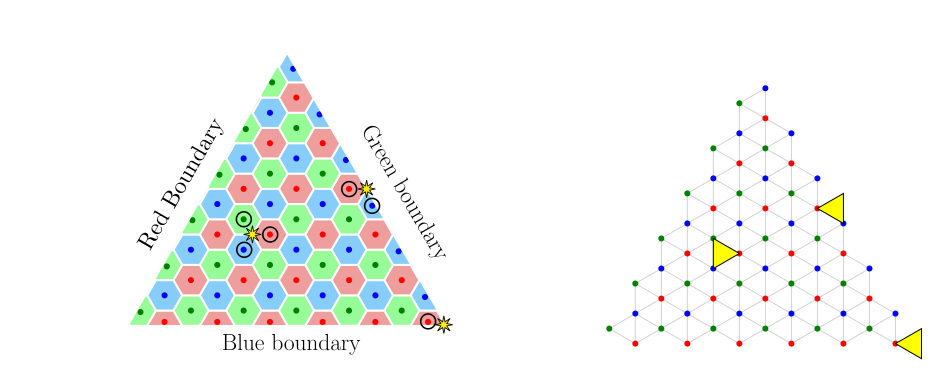
<figcaption class="paper-figure-caption"><b>Fig 1.</b> Figure 1: The colour code and its error model. (a) The 6.6.6 colour code (with boundary). There are data qubits on the vertices of a hexagonal lattice and the checks are the coloured faces. An X-error on a bulk data qubit (the yellow star in the middle of the picture) triggers the three Z-checks shown ringed in black. However, an X-error on a qubit lying on a boundary, only triggers the two checks (faces) containing it (for example the yellow star on the middle right boundary); and if the error occurs it at a corner, it only triggers the single check that it is contained in (the yellow star in the bottom right). (b) The dual lattice of the colour code shown in (a). In this figure the nodes...</figcaption>
</figure>
<figure class="paper-figure-card">
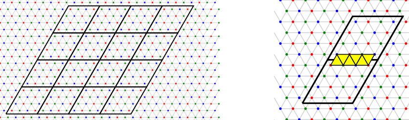
<figcaption class="paper-figure-caption"><b>Fig 2.</b> Figure 2: (a) A rhombus consisting of sixteen tiles. (b) Two adjacent tiles with six errors joining them: one of each colour-orientation.</figcaption>
</figure>
<figure class="paper-figure-card">
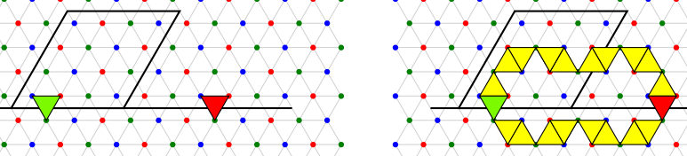
<figcaption class="paper-figure-caption"><b>Fig 3.</b> Figure 3: (a) Given an error f (the red triangle) look in the nearest portal tile (the rhombus shown) and pick the error p with the same colour-orientation (the green triangle) in the nearest portal tile (the tile shown). (b) We can join the red error to the green error by two ‘paths’ as shown: the set of all the shown errors has no syndrome, so the syndrome of the combined yellow and green errors (together these form Ef) is the same as the syndrome of the red error.</figcaption>
</figure>
<figure class="paper-figure-card">
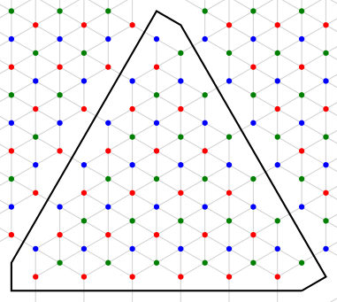
<figcaption class="paper-figure-caption"><b>Fig 4.</b> Figure 4: The distance 11 reduced colour code – the triangular region T shows the embedding of the bounded colour code. We have omitted the checks on the boundary of the triangle as they are not enforced in the reduced colour code. The two key points of the reduced code are that it is infinite so we can apply the modifications we used in Section 5, and if an error set is entirely inside T then its syndrome is identical in the bounded colour code and the reduced colour code.</figcaption>
</figure>
<figure class="paper-figure-card">
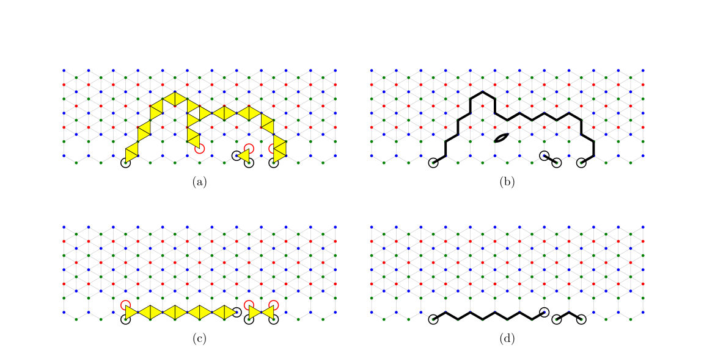
<figcaption class="paper-figure-caption"><b>Fig 5.</b> Figure 5: The four steps in the post-processing described in Lemma 12; working clockwise from the top left: (a) we start with the original error-set. Top right (b): we have the error-set viewed as edges; note one edge (shown as two arcs) is actually a double edge so cancels with itself. Then bottom right (d) we have the projected edge error-set, and then bottom left (c) the actual post-processed error-set. We see that the syndrome of the two sets is the same except for the third row (nodes circled in red).</figcaption>
</figure>
</div>
<p><strong>Summary.</strong> This paper proves that one can find an error-set in the colour code whose weight approximates the true minimum weight decoding within an arbitrary factor $(1+\epsilon)$ using only polynomial time. This result demonstrates that approximate quantum decoding is computationally feasible, despite the underlying exact problem being NP-hard.</p>
<p><strong>Why it may be interesting.</strong> This work directly addresses the computational complexity limits of quantum error correction, providing a theoretical breakthrough by showing that approximate decoding is tractable even when exact decoding is NP-hard.</p>
<details>
<summary>Detailed structure</summary>
<p><strong>Main problem.</strong> The core problem is determining whether approximate minimum weight decoding for quantum error-correcting codes, specifically the colour code, can be achieved in polynomial time.</p>
<p><strong>Main result.</strong> The authors prove that it is possible to find an error-set whose weight is within $(1+\epsilon)$ of the true minimum weight decoding in polynomial time, showing approximate decoding is not NP-hard.</p>
<p><strong>Method.</strong> The approach adapts techniques from solving Euclidean optimization problems (like Arora's work), using dynamic programming and imposing structural constraints (portal respecting) to reduce the problem complexity iteratively.</p>
<p><strong>Model / system.</strong> The system modeled is the colour code, defined on an infinite hexagonal lattice or a finite region thereof. It is used as a quantum error-correcting code for detecting errors (X-errors) that generate a measurable syndrome.</p>
<p><strong>Key observables.</strong> Syndrome ($S$), minimum weight decoding ($    ext{OPT}$), and the resulting approximate error-set weight $|E|$.</p>
<p><strong>Important parameters / regimes.</strong> Approximation factor $\epsilon$, code distance $d$, lattice size parameters $L$ and $M$.</p>
<p><strong>Assumptions / limitations.</strong> The initial polynomial algorithm derived is noted to be impractically large in its complexity, requiring significant theoretical leaps for practical implementation.</p>
<p><strong>Figures summary.</strong> Figures illustrate the colour code structure on lattices (hexagonal/triangular), how errors trigger checks based on location (bulk/boundary), and geometric decompositions using rhombuses or hexagons to constrain error sets.</p>
<p><strong>Paper structure.</strong> The paper builds by first tackling the general approximation problem, then applying techniques involving lattice decomposition (rhombus tiling) and imposing structural constraints ('portal respecting') via dynamic programming. Finally, it refines this process for specific bounded regions of the code.</p>
</details>
<details>
<summary>Abstract</summary>
<p>Recently we showed that minimum weight decoding in the (6.6.6 planar) colour code is NP-hard. However, it remained an open question as to whether it was possible to approximate the minimum weight decoding arbitrarily closely in polynomial time. In this paper we prove that it is possible: for any $\varepsilon>0$ there is an polynomial time algorithm that, given a syndrome, can find an error-set generating that syndrome whose weight is at most $1+\varepsilon$ times the weight of the minimum weight decoding. As a consequence we see that, for any $\varepsilon>0$, there is a polynomial time algorithm that can correct all errors of weight up to $(1-\varepsilon)d/2$ in the distance $d$ colour code (so almost up to the theoretical $d/2$ limit).   The polynomial we give is impractically large, but it does open the door for sensible polynomial time algorithms that approximate minimum weight decoding and, in particular, shows that approximate decoding is not NP-hard.</p>
</details>
<p><sub><a href="#top">↑ back to top</a></sub></p>

<p><a id="paper-2606.17589"></a></p>
<h3 id="asymptotically-optimal-circuit-depth-for-diagonal-unitary-synthesis-and-compilation-on-two-dimensional-grids"><a href="http://arxiv.org/abs/2606.17589v1">Asymptotically Optimal Circuit Depth for Diagonal Unitary Synthesis and Compilation on Two-Dimensional Grids</a></h3>
<p><strong>Authors:</strong> Chengzhuo Xu, Xiao Chen, Zhihao Liu, Zhigang Li<br>
<strong>Type:</strong> theory · <strong>Category:</strong> quantum information and computing · <strong>PDF:</strong> <a href="https://arxiv.org/pdf/2606.17589v1">https://arxiv.org/pdf/2606.17589v1</a><br>
<strong>Analysis basis:</strong> full PDF text, analyzed in chunks</p>
<div class="figure-strip-hint">↔ Scroll figures horizontally</div>
<div class="paper-figures-scroll">
<figure class="paper-figure-card">
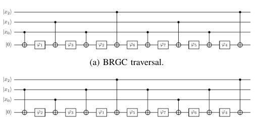
<figcaption class="paper-figure-caption"><b>Fig 1.</b> Fig. 1: Two equivalent basic Gray Path circuits for n = 3: different transition sequences realize the same commuting product of Walsh phases. Phase labels abbreviate the angles φs.</figcaption>
</figure>
<figure class="paper-figure-card">
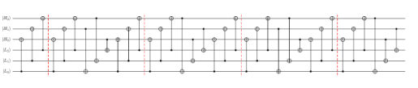
<figcaption class="paper-figure-caption"><b>Fig 2.</b> Fig. 2: CNOT skeletons of the two local mixing modules for nH = nL = 3. Dashed split lines mark the insertion slots (one per step), empty until phases are inserted.</figcaption>
</figure>
<figure class="paper-figure-card">
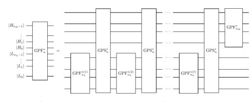
<figcaption class="paper-figure-caption"><b>Fig 3.</b> Fig. 3: Recursive composition of the GPF and GPF∗skele- tons; both carry no phase gates, which are inserted into the slots of their GPS/GPS∗modules (Fig. 2a).</figcaption>
</figure>
<figure class="paper-figure-card">
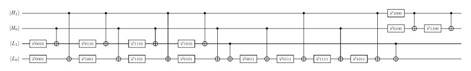
<figcaption class="paper-figure-caption"><b>Fig 4.</b> Fig. 4: Complete GPF phase-insertion circuit for n = 4, obtained by filling every insertion slot of the 4-qubit GPF skeleton. Each phase label φs is indexed by a four-bit Walsh mode.</figcaption>
</figure>
<figure class="paper-figure-card">
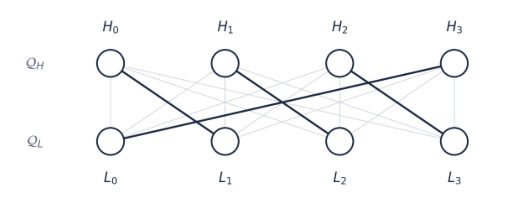
<figcaption class="paper-figure-caption"><b>Fig 5.</b> Fig. 7: Bipartite connectivity abstraction of GPS. Gray edges represent cross-group connections the top-level GPS may access across different steps; black edges illustrate one specific cyclic-offset matching.</figcaption>
</figure>
</div>
<p><strong>Summary.</strong> The paper develops a theoretically optimal method (GPF) for synthesizing diagonal unitary gates. Crucially, it proves that this optimal complexity is maintained when mapping the abstract circuit onto a physically constrained two-dimensional nearest-neighbor grid. This provides essential, closed-form resource estimates that overcome the limitations of heuristic compilation methods.</p>
<p><strong>Why it may be interesting.</strong> This work provides concrete, analytically derived resource estimates for complex quantum operations on realistic hardware architectures, directly addressing the gap between theoretical circuit design and physical implementation constraints relevant to AMO platforms like trapped ions or superconducting qubits.</p>
<details>
<summary>Detailed structure</summary>
<p><strong>Main problem.</strong> The core problem is developing an asymptotically optimal circuit depth for synthesizing and compiling diagonal unitary operations on quantum hardware constrained by nearest-neighbor connectivity.</p>
<p><strong>Main result.</strong> The authors show that the asymptotically optimal depth, $O(2^n/n)$, achieved in all-to-all connectivity using a Gray-Path Framework (GPF), is preserved when compiled onto a two-dimensional nearest-neighbor grid. Furthermore, they detail space-time trade-offs to reduce this depth by factors of $k$.</p>
<p><strong>Method.</strong> The work combines theoretical circuit synthesis (using recursive decomposition into high/low subspaces) with rigorous compilation techniques that map logical connectivity requirements onto physical 2D lattice movements using offset states and SWAP layers.</p>
<p><strong>Model / system.</strong> The system involves quantum circuits realizing $n$-qubit diagonal unitaries, $\Lambda_n(	heta)$. The target hardware is modeled as a two-dimensional nearest-neighbor grid, with extensions to linear chains. The synthesis relies on the Gray-Path Framework (GPF) structure.</p>
<p><strong>Key observables.</strong> Circuit depth ($R_z$ and CNOT layers), gate count, and asymptotic complexity bounds ($\Theta(2^n/n)$).</p>
<p><strong>Important parameters / regimes.</strong> The number of qubits ($n$), the grid topology (2D nearest-neighbor vs. all-to-all), and the space-time trade-off factor ($k$).</p>
<p><strong>Assumptions / limitations.</strong> General-purpose compilers relying on heuristic search are intractable at scale; the analysis assumes the existence of a low-jump Gray code sequence for optimal routing.</p>
<p><strong>Figures summary.</strong> Figures illustrate the recursive structure of GPF, show the mapping onto the two-row grid using offset states (e.g., Fig. 8), and plot normalized depth/gate count convergence curves demonstrating asymptotic optimality compared to search-based routers.</p>
<p><strong>Paper structure.</strong> The paper progresses from establishing the optimal synthesis complexity via GPF in all-to-all connectivity, then details the mapping of this structure onto a two-row nearest-neighbor grid using offset states and SWAP layers. Finally, it analyzes depth-space trade-offs by replicating phase layers across additional rows.</p>
</details>
<details>
<summary>Abstract</summary>
<p>Diagonal unitaries are a fundamental but resource-intensive class of quantum operations, arising as the phase separators of QAOA and the time-evolution blocks of Hamiltonian simulation. Under all-to-all connectivity their optimal depth is established, but on nearest-neighbor hardware general-purpose compilers fall back on heuristic search, which yields no analyzable cost bound and becomes intractable at the very sizes where depth is the bottleneck. We address synthesis and compilation jointly. On the synthesis side, we develop a Gray-Path Framework (GPF) that realizes any $n$-qubit diagonal unitary in asymptotically optimal $R_z$ and CNOT depth $O(2^n/n)$ without ancillas. Our main result is that compiling GPF onto a two-dimensional nearest-neighbor grid preserves this optimality: routing adds depth $Θ(2^n/n)$ and gate count $Θ(2^n)$. Because GPF fixes its entire interaction structure in advance, routing reduces to scheduling a known sequence, with no heuristic search. We give the construction both with and without ancillas: the ancilla-free, cost-optimized layout is a two-row grid, and a $2k$-row layout introduces a space--time tradeoff that cuts depth by $1/k$ while remaining asymptotically optimal for the enlarged register; both are deterministic and analyzed in closed form. The same complexity is also attained on a linear nearest-neighbor chain, so the preservation is topology-independent, holding on any architecture that contains such a chain. All routing bounds are closed-form, giving the concrete resource estimates that heuristic compilers cannot provide at scale.</p>
</details>
<p><sub><a href="#top">↑ back to top</a></sub></p>

<p><a id="paper-2606.17268"></a></p>
<h3 id="breaking-the-bicycle-frame-coset-based-quantum-ldpc-codes"><a href="http://arxiv.org/abs/2606.17268v1">Breaking the bicycle frame: Coset-based quantum LDPC codes</a></h3>
<p><strong>Authors:</strong> Arda Aydin, Itzhak Tamo, Alexander Barg<br>
<strong>Type:</strong> theory · <strong>Category:</strong> quantum information and computing · <strong>PDF:</strong> <a href="https://arxiv.org/pdf/2606.17268v1">https://arxiv.org/pdf/2606.17268v1</a><br>
<strong>Analysis basis:</strong> full PDF text, analyzed in chunks</p>
<div class="figure-strip-hint">↔ Scroll figures horizontally</div>
<div class="paper-figures-scroll">
<figure class="paper-figure-card">
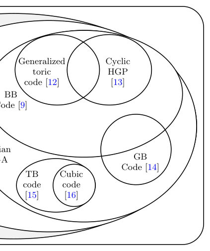
<figcaption class="paper-figure-caption"><b>Fig 1.</b> FIG. 1: Various quantum LDPC codes and their relationship with each other.</figcaption>
</figure>
<figure class="paper-figure-card">
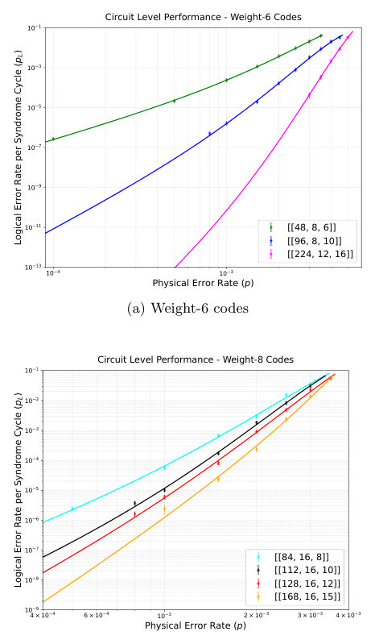
<figcaption class="paper-figure-caption"><b>Fig 2.</b> FIG. 2: Logical error rate 𝑝𝐿as a function of the physical error rate 𝑝for (a) weight-6 and (b) weight-8 𝑄𝐻 𝐺(a, b) codes under the standard circuit-level noise model. The numerical data points represent Monte Carlo simulations, while the solid curves are obtained using the fitting formula ˜𝑝𝐿(𝑝) = 𝑝𝑑circ/2𝑒𝛼+𝛽𝑝+𝛾𝑝2. All codes were decoded using the BP-OSD decoder.</figcaption>
</figure>
<figure class="paper-figure-card">
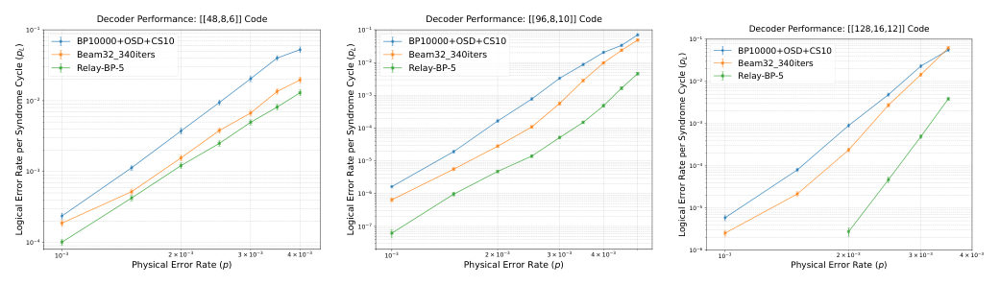
<figcaption class="paper-figure-caption"><b>Fig 3.</b> FIG. 3: Logical error rate 𝑝𝐿as a function of physical error rate 𝑝for various 𝑄𝐻 𝐺(a, b) codes under different decoders: (a) the [[48, 8, 6]] code, (b) the [[96, 8, 10]] code, and (c) the [[128, 16, 12]] code.</figcaption>
</figure>
</div>
<p><strong>Summary.</strong> This paper introduces a generalized group-theoretic construction method for quantum LDPC codes by utilizing the action of a group on its cosets. This framework expands beyond previous constructions, yielding new high-performance codes whose parameters and noise thresholds are analyzed. The authors also provide systematic methods to build efficient syndrome extraction circuits for these novel codes.</p>
<p><strong>Why it may be interesting.</strong> This work provides a powerful algebraic tool (group theory) to generate structured quantum codes, which is crucial for designing hardware-efficient error correction protocols in superconducting or trapped-ion platforms.</p>
<details>
<summary>Detailed structure</summary>
<p><strong>Main problem.</strong> The primary goal is to construct novel quantum Low-Density Parity-Check (LDPC) codes that surpass the limitations of existing constructions, particularly those based on Two-Block Group Algebra (2BGA) codes.</p>
<p><strong>Main result.</strong> A new coset-based construction method is introduced using group actions on cosets, yielding several concrete examples of high-performing quantum LDPC codes with parameters like [[48, 8, 6]].</p>
<p><strong>Method.</strong> The authors develop a general framework based on the action of a group G on the cosets of its subgroup H to define parity-check matrices for CSS quantum codes.</p>
<p><strong>Model / system.</strong> The model is theoretical: constructing fault-tolerant quantum error correction codes, specifically two-block CSS quantum LDPC codes defined by group algebra actions $Q^H_G(a, b)$.</p>
<p><strong>Key observables.</strong> Code parameters $[[n, k, d]]$, achievable syndrome extraction circuit depth ($w+2$), and noise thresholds ($\approx 0.65\%$ for weight-6 family).</p>
<p><strong>Important parameters / regimes.</strong> Group structures $(G, H)$, stabilizer weights ($w_a, w_b$), code length $n=2[G:H]$, and thickness $ heta$ of the Tanner graph.</p>
<p><strong>Assumptions / limitations.</strong> The analysis relies on establishing planarity properties for subgraphs related to syndrome extraction cycles and assuming specific structural constraints on group elements to simplify the search space.</p>
<p><strong>Figures summary.</strong> Figures illustrate relationships between various quantum LDPC codes (e.g., BB Code, ZSZ Code) and detail the structure of the wheel graph used in syndrome extraction analysis.</p>
<p><strong>Paper structure.</strong> The paper progresses from introducing the general coset-based construction to deriving mathematical properties like thickness bounds using planarity arguments, systematically searching for new code examples, and finally detailing the circuit implementation for syndrome extraction.</p>
</details>
<details>
<summary>Abstract</summary>
<p>Generalizing the construction of two-block group algebra (2BGA) codes, we introduce a family of two-block quantum LDPC codes constructed using the action of a group on the cosets of its subgroup. This replaces the regular group actions of the earlier two-block constructions and significantly expands the search space, yielding new quantum LDPC codes outside the 2BGA family. Through a computer search, we identify several new quantum LDPC codes, including weight-6 codes with parameters $[[48,8,6]]$, $[[96,8,10]]$, and $[[224,12,16]]$, as well as weight-8 codes with parameters $[[84,16,8]]$, $[[112,16,10]]$, $[[128,16,12]]$, and $[[168,16,15]]$. Furthermore, we introduce a maximally packed syndrome extraction schedule of depth $w+2$, including initialization and measurement steps, for any code with a maximum stabilizer weight of $w$ from our family. Under a standard circuit-level noise model, our codes, when decoded using BP-OSD, perform competitively with BB codes, achieving thresholds of $\approx0.65\%$ for the weight-6 family and $\approx0.35\%$ for the weight-8 family. Finally, we introduce a group-theoretic framework to generate sequences of graph-based covers of 2BGA codes, recovering and extending recent results on code constructions of this type.</p>
</details>
<p><sub><a href="#top">↑ back to top</a></sub></p>

<p><a id="paper-2606.17359"></a></p>
<h3 id="canonical-regularization-of-the-stationary-coulomb-problem-and-an-aufbau-like-spectral-ordering"><a href="http://arxiv.org/abs/2606.17359v1">Canonical regularization of the stationary Coulomb problem and an Aufbau-like spectral ordering</a></h3>
<p><strong>Authors:</strong> Anand Aruna Kumar<br>
<strong>Type:</strong> theory · <strong>Category:</strong> other · <strong>PDF:</strong> <a href="https://arxiv.org/pdf/2606.17359v1">https://arxiv.org/pdf/2606.17359v1</a><br>
<strong>Analysis basis:</strong> full PDF text, analyzed in chunks</p>
<div class="figure-strip-hint">↔ Scroll figures horizontally</div>
<div class="paper-figures-scroll">
<figure class="paper-figure-card">
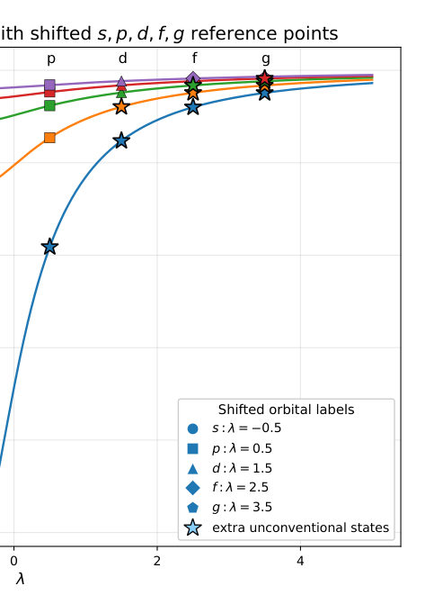
<figcaption class="paper-figure-caption"><b>Fig 1.</b> Figure 1: Regularized energy Enr,λ as a function of the separation label λ.</figcaption>
</figure>
<figure class="paper-figure-card">
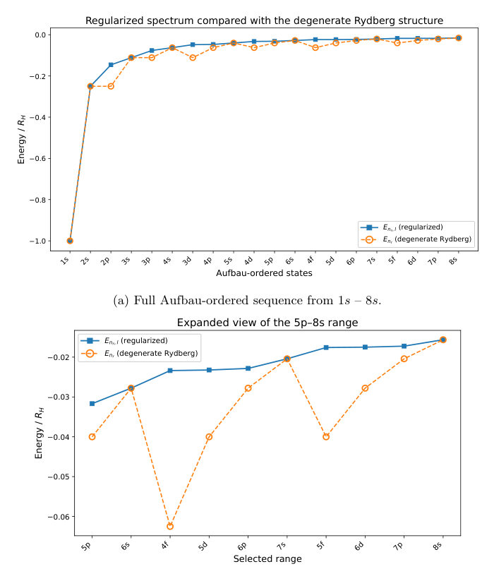
<figcaption class="paper-figure-caption"><b>Fig 2.</b> Figure 2: Comparison of the degenerate Rydberg energies Enr with the shifted regularized spectrum Enr,l along the Aufbau-ordered sequence. The upper panel shows the full displayed range, while the lower panel expands the higher-state region where the energy separation is smaller.</figcaption>
</figure>
</div>
<p><strong>Summary.</strong> The paper analyzes the hydrogen atom using a regularized de Broglie-Bohm quantum mechanical framework. By imposing canonical constraints, the authors modify the standard radial and angular equations, leading to solutions involving generalized special functions with non-integral parameters. This regularization mathematically forces the energy spectrum to exhibit an Aufbau-like ordering for higher angular momentum states, lifting the inherent Coulomb degeneracy.</p>
<p><strong>Why it may be interesting.</strong> This work is theoretically interesting because it uses advanced mathematical techniques (de Broglie-Bohm formalism, canonical regularization) applied to a fundamental physical problem (Coulomb potential) to derive an emergent structure (Aufbau principle), providing a purely mathematical mechanism for spectral splitting.</p>
<details>
<summary>Detailed structure</summary>
<p><strong>Main problem.</strong> To investigate whether canonical regularization of the stationary Coulomb problem can intrinsically generate an Aufbau/Madelung spectral ordering, thereby lifting the inherent degeneracy found in the standard hydrogen atom model.</p>
<p><strong>Main result.</strong> The regularized spectrum yields a sequence that follows the Aufbau/Madelung order for higher angular momentum states, while the $l=0$ sector retains the standard degenerate Rydberg sequence.</p>
<p><strong>Method.</strong> The authors apply canonical regularization constraints to the de Broglie-Bohm representation of the Coulomb problem, leading to modified Sturm-Liouville equations solved using generalized special functions.</p>
<p><strong>Model / system.</strong> The system analyzed is the one-center stationary Coulomb potential (hydrogen atom). The mathematical framework involves decomposing the wavefunction into amplitude and phase components within a regularized de Broglie-Bohm representation.</p>
<p><strong>Key observables.</strong> The energy eigenvalues $E_{n,r,\lambda}$ are key observables; the spectral ordering itself is the primary result.</p>
<p><strong>Important parameters / regimes.</strong> The regularization introduces non-integral parameters into the associated Laguerre, Legendre, and Bessel functions. The minimum labeling scheme $\lambda = l - 1/2$ is crucial for comparison.</p>
<p><strong>Assumptions / limitations.</strong> The treatment is explicitly limited to an analytical examination of spectral ordering in a regularized one-center problem, not a replacement for full many-electron atomic structure theory (which requires considering screening and correlation).</p>
<p><strong>Figures summary.</strong> Figure 1 illustrates the energy $E_{n_r,\lambda}$ vs $\lambda$, showing symmetry around $\lambda = -1/2$ and mapping this minimum branch to the s-sector. Figure 2 compares the degenerate Rydberg energies with the shifted regularized spectrum, demonstrating the Aufbau order.</p>
<p><strong>Paper structure.</strong> The paper first establishes the mathematical framework by applying canonical regularization to the de Broglie-Bohm equations for the Coulomb problem. It then solves the resulting separated radial, orbital, and axial differential equations using generalized special functions. Finally, it analyzes the energy quantization condition derived from these solutions to map out the spectral ordering.</p>
</details>
<details>
<summary>Abstract</summary>
<p>The stationary hydrogen atom has Coulomb degeneracy across orbital levels, whereas the Aufbau/Madelung ordering is an empirical, many-electron rule established in atomic physics. We examine the hydrogen atom through a regularized de Broglie--Bohm representation, in which stationary amplitude current constraints generate separable Sturm--Liouville branches. In this formulation, the radial, orbital, and magnetic sectors acquire canonical Langer-like inverse square corrections. The modified boundary value problems allow analytical solutions and produce a hydrogen-like spectrum with regularized radial and angular indices. Consequently, radial Coulomb quantization acquires an orbital dependent shift, lifting the Coulomb degeneracy and producing a spectral ordering that follows the Aufbau/Madelung sequence.   On this basis, we construct the ordering of the regularized de Broglie--Bohm states and show that the spectral structure retains the standard degenerate Rydberg sequence in the l=0 sector. The separated amplitudes are represented by generalized special function branches, including the associated Laguerre, Legendre, and Bessel functions with non-integral parameters arising from regularized separation. Therefore, the treatment is intended as an analytical examination of spectral ordering in a regularized one center Coulomb problem rather than as a replacement for the many electron atomic structure theory.   Keywords: de Broglie--Bohm representation; Coulomb spectrum; canonical regularization; Langer correction; Sturm--Liouville equations; Aufbau principle; Madelung ordering; associated Legendre functions; associated Laguerre functions; Bessel functions.</p>
</details>
<p><sub><a href="#top">↑ back to top</a></sub></p>

<p><a id="paper-2606.17751"></a></p>
<h3 id="cavity-method-for-permutation-models-on-cayley-trees"><a href="http://arxiv.org/abs/2606.17751v1">Cavity method for permutation models on Cayley trees</a></h3>
<p><strong>Authors:</strong> Masayuki Ohzeki<br>
<strong>Type:</strong> theory · <strong>Category:</strong> statistical mechanics · <strong>PDF:</strong> <a href="https://arxiv.org/pdf/2606.17751v1">https://arxiv.org/pdf/2606.17751v1</a><br>
<strong>Analysis basis:</strong> full PDF text, analyzed in chunks</p>
<div class="figure-strip-hint">↔ Scroll figures horizontally</div>
<div class="paper-figures-scroll">
<figure class="paper-figure-card">
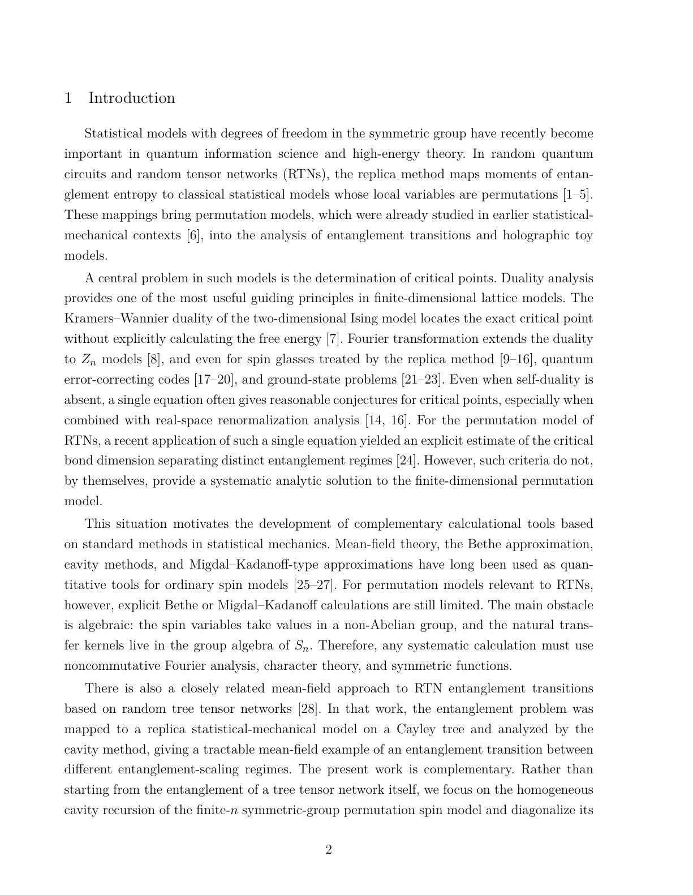
<figcaption class="paper-figure-caption"><b>Fig 1.</b> Low-resolution page preview, page 2</figcaption>
</figure>
<figure class="paper-figure-card">
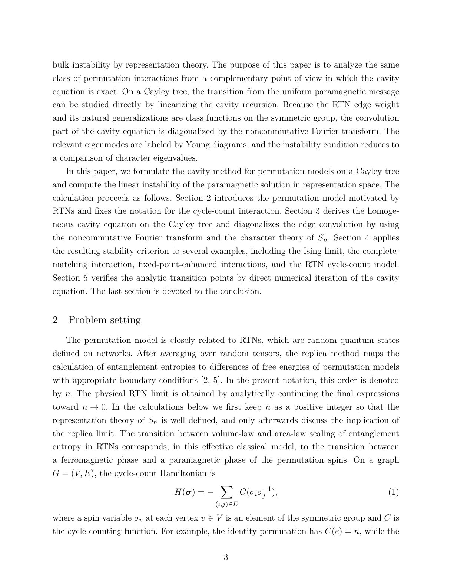
<figcaption class="paper-figure-caption"><b>Fig 2.</b> Low-resolution page preview, page 3</figcaption>
</figure>
<figure class="paper-figure-card">
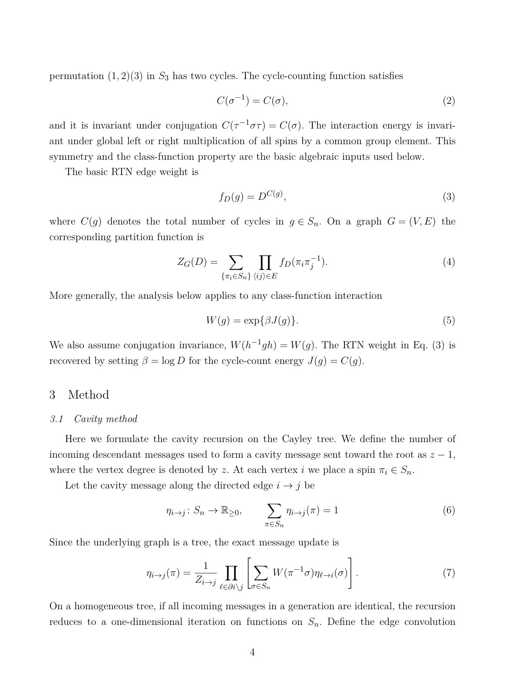
<figcaption class="paper-figure-caption"><b>Fig 3.</b> Low-resolution page preview, page 4</figcaption>
</figure>
<figure class="paper-figure-card">
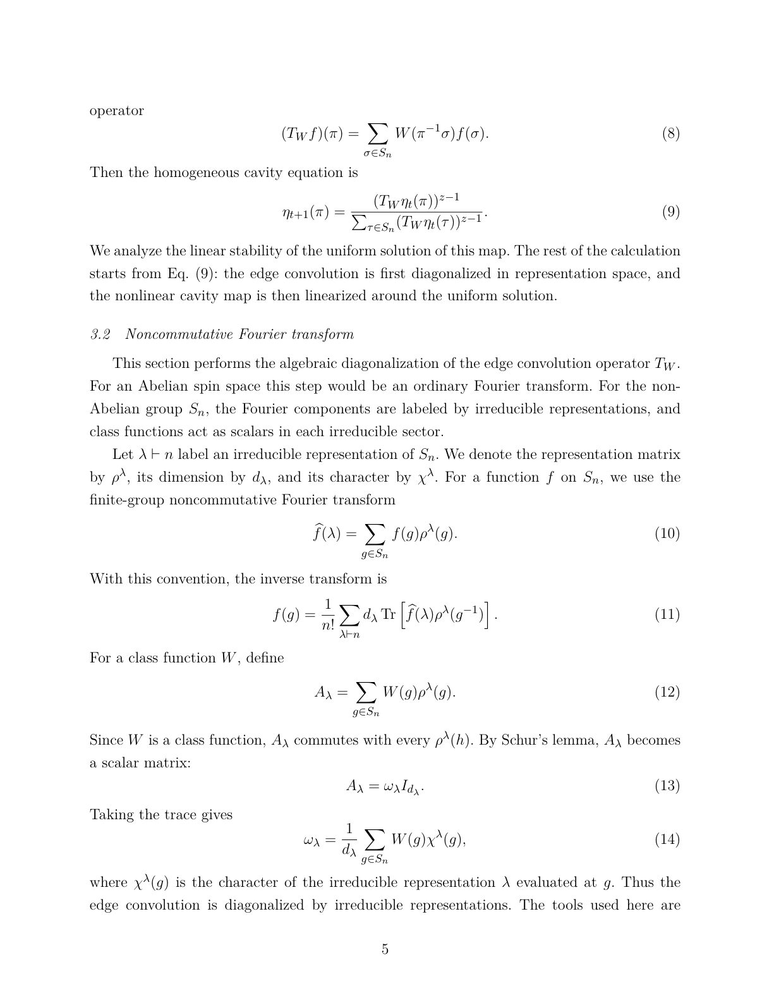
<figcaption class="paper-figure-caption"><b>Fig 4.</b> Low-resolution page preview, page 5</figcaption>
</figure>
<figure class="paper-figure-card">
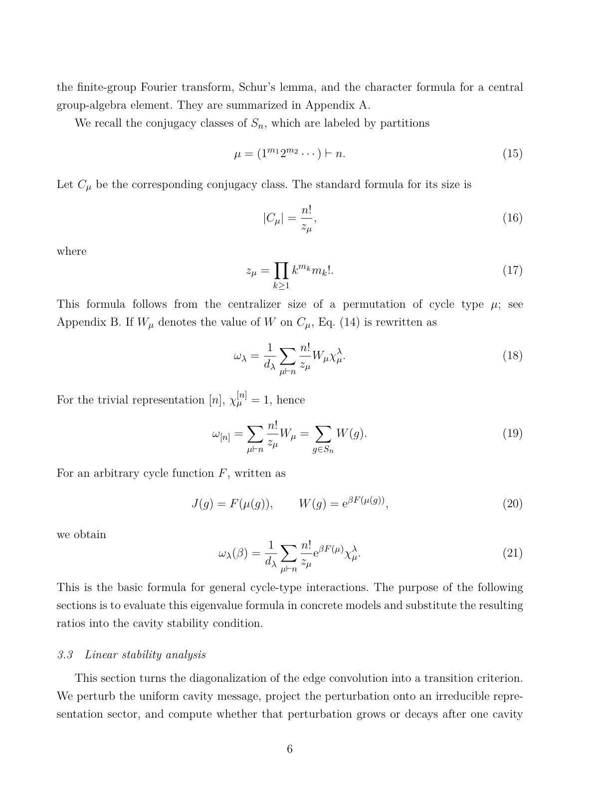
<figcaption class="paper-figure-caption"><b>Fig 5.</b> Low-resolution page preview, page 6</figcaption>
</figure>
</div>
<p><strong>Summary.</strong> This paper studies permutation spin models on Cayley trees by applying the cavity method. It uses representation theory to diagonalize the system's transfer operator, yielding analytic criteria for phase transitions based on character eigenvalue ratios. The results allow researchers to predict critical points in these complex statistical mechanical systems.</p>
<p><strong>Why it may be interesting.</strong> This work provides a powerful, mathematically rigorous framework (using group representation theory) to analyze phase transitions in complex lattice/tree structures that are far beyond simple mean-field treatments, connecting statistical mechanics to advanced algebraic methods.</p>
<details>
<summary>Detailed structure</summary>
<p><strong>Main problem.</strong> The research analyzes permutation statistical models defined on a Cayley tree structure to determine their critical points and stability regimes.</p>
<p><strong>Main result.</strong> The linear stability of the uniform paramagnetic solution is controlled by character eigenvalue ratios derived from diagonalizing the edge convolution operator. The method provides analytic criteria for phase transitions in these complex spin systems.</p>
<p><strong>Method.</strong> The cavity method, combined with non-commutative Fourier transforms using irreducible representations of the symmetric group $S_n$, is employed to linearize the homogeneous recursion equation around the paramagnetic state.</p>
<p><strong>Model / system.</strong> The model is a permutation spin system where variables take values in the symmetric group $S_n$. The interaction weights are assumed to be class functions on $S_n$, leading to an edge convolution operator that can be diagonalized in representation space.</p>
<p><strong>Key observables.</strong> Local stability condition derived from character eigenvalue ratios ($\omega_\lambda / \omega_{[n]}$), and order parameters like Potts-like magnetization ($m_{id}(\eta)$) and standard-representation magnetization ($m_{	ext{std}}(\eta)$).</p>
<p><strong>Important parameters / regimes.</strong> The coordination number $z$ of the Cayley tree, the size of the group $n$, and the coupling constants embedded in the weight function $W(g)$.</p>
<p><strong>Assumptions / limitations.</strong> The weights are assumed to be class functions on $S_n$. The analysis relies on approximating bulk critical behavior using the Bethe/Cayley-tree approximation, which may fail for entanglement transitions.</p>
<p><strong>Figures summary.</strong> Figure 1 illustrates how the magnetization of the cavity fixed point evolves as a function of inverse temperature $eta$ for various models, showing distinct flow regimes relative to the analytically derived instability points.</p>
<p><strong>Paper structure.</strong> The paper develops the theory by first setting up the model and applying the cavity method. It then uses representation theory to diagonalize the transfer operator, deriving stability criteria based on eigenvalue ratios. Finally, it verifies these analytic results through direct numerical iteration of the cavity equations for specific models.</p>
</details>
<details>
<summary>Abstract</summary>
<p>Motivated by permutation statistical models arising in random tensor networks, we study permutation models on a Cayley tree whose variables take values in the symmetric group $\Sn$. The pair interaction is assumed to depend only on the cycle type of the relative permutation. Then the Boltzmann weight is written as a class function on $\Sn$. This property diagonalizes the edge convolution operator in irreducible representation sectors. As a result, the linear stability of the uniform paramagnetic cavity solution is controlled by the character eigenvalue ratios. For cycle-factorized weights, these eigenvalues can be expressed as specializations of Schur functions. We derive the instability criteria and also verify their validity by comparison with direct numerical iterations of the cavity equation.</p>
</details>
<p><sub><a href="#top">↑ back to top</a></sub></p>

<p><a id="paper-2606.18240"></a></p>
<h3 id="impulse-decoding-of-quantum-ldpc-codes-equivalence-of-degeneracy-and-code-shortening"><a href="http://arxiv.org/abs/2606.18240v1">Impulse Decoding of Quantum LDPC Codes: Equivalence of Degeneracy and Code-Shortening</a></h3>
<p><strong>Authors:</strong> Shobhit Bhatnagar, Michele Pacenti, Nithin Raveendran, David Declercq, Bane Vasić<br>
<strong>Type:</strong> theory · <strong>Category:</strong> quantum information and computing · <strong>PDF:</strong> <a href="https://arxiv.org/pdf/2606.18240v1">https://arxiv.org/pdf/2606.18240v1</a><br>
<strong>Analysis basis:</strong> full PDF text, analyzed in chunks</p>
<div class="figure-strip-hint">↔ Scroll figures horizontally</div>
<div class="paper-figures-scroll">
<figure class="paper-figure-card">
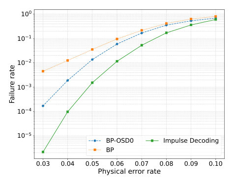
<figcaption class="paper-figure-caption"><b>Fig 1.</b> Fig. 1: Performance of impulse decoding (Algorithm 1) for the [[288, 12, 18]] BB code under code-capacity noise.</figcaption>
</figure>
<figure class="paper-figure-card">
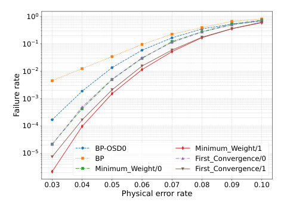
<figcaption class="paper-figure-caption"><b>Fig 2.</b> Fig. 2: Performance of impulse decoding (Algorithm 1) for the [[288, 12, 18]] BB code. The labels 0 and 1 in the legend indicate shortening to 0 and 1, respectively.</figcaption>
</figure>
<figure class="paper-figure-card">
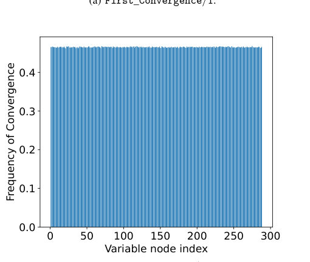
<figcaption class="paper-figure-caption"><b>Fig 3.</b> Fig. 3: Frequency of convergence upon shortening vari- able nodes under (a) First_Convergence/1 and (b) Minimum_Weight/1, for the [[288, 12, 18]] BB code at phys- ical error rate 0.03.</figcaption>
</figure>
<figure class="paper-figure-card">
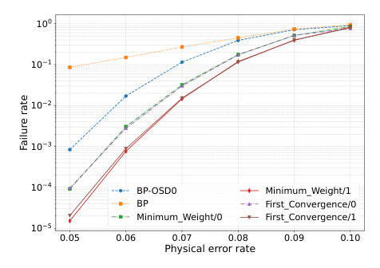
<figcaption class="paper-figure-caption"><b>Fig 4.</b> Fig. 5: Performance of impulse decoding (Algorithm 1) for the [[882, 24, 18 ≤d ≤24]] B1 LP code.</figcaption>
</figure>
<figure class="paper-figure-card">
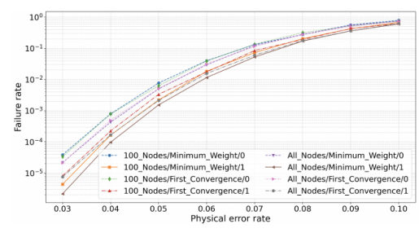
<figcaption class="paper-figure-caption"><b>Fig 5.</b> Fig. 4: Comparison of impulse decoding (Algorithm 1) for the [[288, 12, 18]] BB code when shortening all 288 variable nodes versus shortening only the first 100 variable nodes.</figcaption>
</figure>
</div>
<p><strong>Summary.</strong> This paper develops advanced decoding algorithms, notably impulse decoding, for Quantum LDPC codes by establishing a novel link: quantum degeneracy is equivalent to classical code shortening. The proposed methods significantly improve error correction performance and reduce complexity compared to prior state-of-the-art techniques under realistic noise models.</p>
<p><strong>Why it may be interesting.</strong> While focused on QEC theory, the rigorous mathematical connection drawn between quantum degeneracy and classical coding concepts like 'shortening' provides deep insights into the underlying algebraic structure of fault-tolerant quantum computation.</p>
<details>
<summary>Detailed structure</summary>
<p><strong>Main problem.</strong> The paper addresses quantum degeneracy in Quantum Error Correction (QEC) within stabilizer codes, which lacks a clear classical coding-theoretic interpretation.</p>
<p><strong>Main result.</strong> It establishes that quantum degeneracy is mathematically equivalent to the classical operation of code shortening performed at the decoder. A novel decoding scheme called impulse decoding significantly outperforms existing methods under various noise conditions.</p>
<p><strong>Method.</strong> The authors develop and compare multiple parallel decoding schemes, including impulse decoding and residual-error decoding, by leveraging the theoretical link between quantum degeneracy and classical code shortening.</p>
<p><strong>Model / system.</strong> The study focuses on Quantum Low-Density Parity-Check (QLDPC) codes constructed using the stabilizer formalism from pairs of classical linear codes (CSS codes). Performance is tested using specific examples like the [[288, 12, 18]] BB code.</p>
<p><strong>Key observables.</strong> Failure rate vs. physical error rate; logical error rates; decoding latency; and computational complexity relative to existing decoders.</p>
<p><strong>Important parameters / regimes.</strong> Physical error rate ($p$); number of parallel decoders ($N$); maximum residual error rounds ($R$).</p>
<p><strong>Assumptions / limitations.</strong> The analysis relies on the assumption that restricting the search space via code shortening (e.g., fixing $\hat{e}_1=0$) is sufficient to maintain correctness while reducing complexity.</p>
<p><strong>Figures summary.</strong> Figures compare impulse decoding performance against Belief Propagation variants, showing superior error correction capability; they also illustrate how limiting variable node shortening to a subset maintains high performance.</p>
<p><strong>Paper structure.</strong> The paper first establishes the theoretical link between degeneracy and code shortening. It then introduces Impulse Decoding as a parallel scheme based on this insight. Finally, it presents advanced variations combining impulse decoding with residual error correction for improved noise resilience.</p>
</details>
<details>
<summary>Abstract</summary>
<p>Quantum error correction is essential for building scalable quantum computers. Within the stabilizer formalism, the Calderbank-Shor-Steane framework constructs quantum codes from pairs of classical linear codes. A distinctive feature in this setting is degeneracy, where multiple equivalent error estimates exist-a phenomenon that has no classical counterpart, and the lack of a meaningful classical coding-theoretic interpretation of which has remained a gap in the literature. In this paper, we demonstrate that degeneracy is closely related to the classical operation of shortening of a linear block code. Interestingly, the shortening here takes place at the decoder rather than at the encoder. Leveraging this insight, we present a parallel decoding scheme for quantum low-density parity-check codes, which we term impulse decoding, that significantly outperforms belief propagation with ordered statistics decoding, as well as several other existing techniques, under both code-capacity and circuit-level noise, with significantly lesser complexity. We then present another algorithm based on decoding of residual errors, which when combined with impulse decoding achieves further performance improvement under circuit-level noise.</p>
</details>
<p><sub><a href="#top">↑ back to top</a></sub></p>

<p><a id="paper-2606.17708"></a></p>
<h3 id="monopoles-center-vortices-confinement-in-31d-and-the-lens-space-twisted-partition-function"><a href="http://arxiv.org/abs/2606.17708v1">Monopoles, Center Vortices, Confinement in (3+1)d, and the Lens-Space Twisted Partition Function</a></h3>
<p><strong>Authors:</strong> Yui Hayashi, Yuya Tanizaki<br>
<strong>Type:</strong> theory · <strong>Category:</strong> other · <strong>PDF:</strong> <a href="https://arxiv.org/pdf/2606.17708v1">https://arxiv.org/pdf/2606.17708v1</a><br>
<strong>Analysis basis:</strong> full PDF text, analyzed in chunks</p>
<div class="figure-strip-hint">↔ Scroll figures horizontally</div>
<div class="paper-figures-scroll">
<figure class="paper-figure-card">
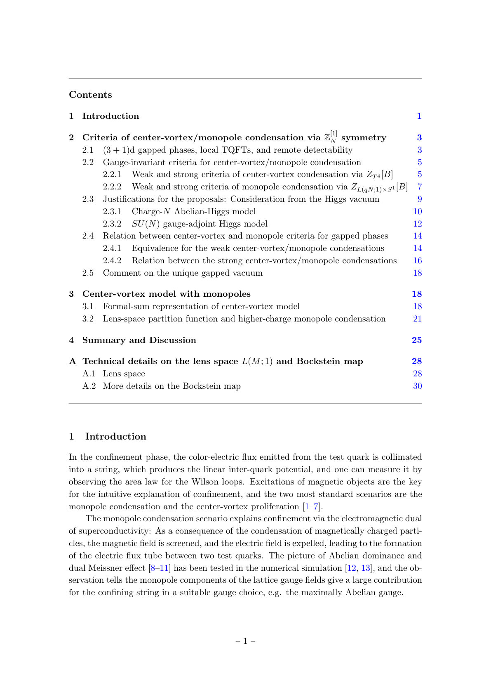
<figcaption class="paper-figure-caption"><b>Fig 1.</b> Low-resolution page preview, page 2</figcaption>
</figure>
<figure class="paper-figure-card">

<figcaption class="paper-figure-caption"><b>Fig 2.</b> Low-resolution page preview, page 3</figcaption>
</figure>
<figure class="paper-figure-card">

<figcaption class="paper-figure-caption"><b>Fig 3.</b> Low-resolution page preview, page 4</figcaption>
</figure>
<figure class="paper-figure-card">

<figcaption class="paper-figure-caption"><b>Fig 4.</b> Low-resolution page preview, page 5</figcaption>
</figure>
<figure class="paper-figure-card">

<figcaption class="paper-figure-caption"><b>Fig 5.</b> Low-resolution page preview, page 6</figcaption>
</figure>
</div>
<p><strong>Summary.</strong> This theoretical work develops gauge-invariant criteria to distinguish and relate center-vortex condensation and monopole condensation in $(3+1)$D Yang-Mills theory using twisted partition functions on specific manifolds. The core achievement is proving that these two distinct topological phenomena are mathematically linked, suggesting a unified understanding of confinement mechanisms.</p>
<p><strong>Why it may be interesting.</strong> While highly specialized, the rigorous mathematical framework connecting different types of topological defects (vortices vs. monopoles) via shared TQFT invariants is conceptually rich for understanding emergent order parameters in quantum field theories.</p>
<details>
<summary>Detailed structure</summary>
<p><strong>Main problem.</strong> The paper aims to establish gauge-invariant criteria for identifying center-vortex condensation and monopole condensation in $(3+1)$ dimensional Yang-Mills theories.</p>
<p><strong>Main result.</strong> It proves a deep relationship showing that the gapped phase exhibiting center-vortex condensation necessarily implies the presence of monopole condensation, linking these two confinement mechanisms.</p>
<p><strong>Method.</strong> The analysis heavily relies on using $\mathbb{Z}_N$-symmetry twisted partition functions calculated on specific 4-manifolds like the torus ($T^4$) and lens spaces ($L(qN; 1) 	imes S^1$).</p>
<p><strong>Model / system.</strong> The primary model is SU(N) Yang-Mills theory, often studied in the context of an adjoint Higgs phase. The mathematical tools involve topological field theories (TQFTs) and analyzing partition function ratios on compactified spaces.</p>
<p><strong>Key observables.</strong> The ratio of twisted partition functions $\mathcal{Z}[B]/\mathcal{Z}[0]$ serves as the diagnostic for condensation; other observables include Wilson loops and inter-quark potentials.</p>
<p><strong>Important parameters / regimes.</strong> The gauge group rank $N$, the background flux parameters ($q, N$), and the assumption of a non-zero mass gap (gapped phase).</p>
<p><strong>Assumptions / limitations.</strong> Key assumptions include locality, finiteness of the relevant Hilbert space dimension in the TQFT limit, and the existence of a mass gap for the equivalence theorems to hold.</p>
<p><strong>Figures summary.</strong> Not specified by notes; the structure suggests mathematical derivations involving manifold decompositions (e.g., $M^4 = N_1^4 \cup_{Y^3} N_2^4$) and topological maps like Dehn twists.</p>
<p><strong>Paper structure.</strong> The paper progresses by first proposing criteria using twisted partition functions on $T^4$ and $L(qN; 1) 	imes S^1$. It then rigorously proves the equivalence between weak/strong condensation for both vortices and monopoles, culminating in topological calculations involving Bockstein maps on lens spaces.</p>
</details>
<details>
<summary>Abstract</summary>
<p>We propose the gauge-invariant criteria of center-vortex condensation and monopole condensation using the $\mathbb{Z}_N^{[1]}$-symmetry twisted partition functions: The torus twisted partition function characterizes the center-vortex condensation, and the lens-space twisted partition function characterizes the monopole condensation. To justify our proposal, we study how these twisted partition functions behave in the adjoint Higgs phase and show that their leading nontrivial contributions come from the center vortex and monopole, respectively. Using the techniques of topological field theories, we uncover the relation between the center-vortex and monopole condensations, and in particular, we prove that the gapped phase with the center-vortex condensation necessarily shows the monopole condensation, too. We then study a center-vortex model with monopoles as an illustrative example, and the higher-charge monopole condensation gives an example of the symmetry fractionalization, which goes beyond the conventional Wilson-'t Hooft classification.</p>
</details>
<p><sub><a href="#top">↑ back to top</a></sub></p>

<p><a id="paper-2606.17622"></a></p>
<h3 id="quantum-mechanics-in-configuration-space-in-context"><a href="http://arxiv.org/abs/2606.17622v1">Quantum mechanics in configuration space in context</a></h3>
<p><strong>Authors:</strong> Arwa Bukhari, Margherita Moro, Max Davies, Alastair Wilson, Almut Beige<br>
<strong>Type:</strong> theory · <strong>Category:</strong> other · <strong>PDF:</strong> <a href="https://arxiv.org/pdf/2606.17622v1">https://arxiv.org/pdf/2606.17622v1</a><br>
<strong>Analysis basis:</strong> full PDF text, analyzed in chunks</p>
<div class="figure-strip-hint">↔ Scroll figures horizontally</div>
<div class="paper-figures-scroll">
<figure class="paper-figure-card">

<figcaption class="paper-figure-caption"><b>Fig 1.</b> FIG. 1. Illustration of the relations between the three main formulations of CM, namely Newtonian, Lagrangian and Hamiltonian mechanics. (a) Lagrangian mechanics can be derived from Newtonian mechanics by applying d’Alembert’s principle, thereby leading to the Euler-Lagrange equations in Eq. (8). (b) Moreover, the principle of least action can be used to derive Newton’s second law from Lagrangian mechanics. (c) Hamiltonian mechanics is obtained from the Lagrangian formulation by applying the Legendre transformation. How- ever, this transformation is not always reversible, which is why we cannot always regain Lagrangian mechanics from the Hamiltonian formalism. While Hamiltonian mechanics is...</figcaption>
</figure>
<figure class="paper-figure-card">

<figcaption class="paper-figure-caption"><b>Fig 2.</b> FIG. 2. Illustration of four different sets of basis states which are all linked via Fourier transforms and which can be used interchangeably to describe a single quantum mechanical par- ticle moving along the x-axis. The most classical among the quantum basis states are the |x, v⟩states which correspond directly to the (x, v) states of Newtonian mechanics. In con- trast to this, the |p, a⟩states, are the least classical quantum bases, since they are equal superpositions of all |x, v⟩states. Such states do not exist in CM.</figcaption>
</figure>
<figure class="paper-figure-card">

<figcaption class="paper-figure-caption"><b>Fig 3.</b> FIG. 3. An illustration of how QMCS and SQM relate to the classical theories which they respectively reduce. The classical-quantum ‘conceptual continuity’ flows upward in the chart, i.e. the ‘conceptual continuity’ between QMCS and Newtonian mechanics is more enhanced than the conceptual continuity between SQM and Hamiltonian mechanics. (a) As shown earlier in Section II, Hamiltonian mechanics can be derived from Newtonian mechanics. They are nonetheless distinct, and Newtonian mechanics is more physically per- spicuous. (b) QMCS is derived by applying a physically mo- tivated quantisation procedure to Newtonian mechanics. (c) Moreover, we can regain Newton’s equations in QMCS, since highly...</figcaption>
</figure>
</div>
<p><strong>Summary.</strong> The paper proposes Quantum Mechanics in Configuration Space (QMCS) as an alternative formalism to improve the conceptual link between QM and CM. By quantizing based on Newtonian mechanics using position-velocity states, QMCS supports independent observables like velocity ($\hat{v}$), which is often lost in standard canonical quantization. This suggests a more physically transparent quantum theory derived from classical principles.</p>
<p><strong>Why it may be interesting.</strong> This work is highly relevant to foundational theoretical physics, particularly concerning the precise mathematical structure required to bridge classical intuition (like velocity) into a fully consistent quantum description beyond standard canonical quantization rules.</p>
<details>
<summary>Detailed structure</summary>
<p><strong>Main problem.</strong> The paper addresses enhancing the conceptual continuity between quantum mechanics (QM) and classical mechanics (CM) by proposing an alternative formalism: Quantum Mechanics in Configuration Space (QMCS). It aims to resolve inconsistencies arising from standard canonical quantization.</p>
<p><strong>Main result.</strong> QMCS, which quantizes based on Newtonian mechanics using position-velocity states $|x, v\rangle$, provides a framework that maintains strong conceptual continuity with classical dynamics and supports independent observables for velocity ($\hat{v}$) and acceleration ($\hat{a}$).</p>
<p><strong>Method.</strong> The authors compare three formulations of CM (Newtonian, Lagrangian, Hamiltonian) to determine the most physically transparent quantization procedure. They then derive the quantum dynamics using a basis built on $(x, v)$ states.</p>
<p><strong>Model / system.</strong> The model is a single mechanical particle moving in free space along one dimension ($x$). The formalism compares standard QM (based on canonical commutation relations) against QMCS (based on Newtonian mechanics).</p>
<p><strong>Key observables.</strong> Position ($\hat{x}$), velocity ($\hat{v}$), momentum ($\hat{p}$), and acceleration ($\hat{a}$) are key observables, with the paper deriving new commutation relations like $[\hat{v}, \hat{a}] = i\hbar$.</p>
<p><strong>Important parameters / regimes.</strong> The fundamental constant $\hbar$ governs the quantum corrections; the analysis focuses on the free space limit ($V(x)=0$).</p>
<p><strong>Assumptions / limitations.</strong> The primary assumption is that Newtonian mechanics provides the most physically perspicuous starting point for quantization. It also assumes QMCS can be compatible with various measurement interpretations.</p>
<p><strong>Figures summary.</strong> Figures illustrate the conceptual relationship between different CM formulations and show how QMCS maintains a stronger link to classical dynamics compared to standard QM approaches.</p>
<p><strong>Paper structure.</strong> The paper first establishes the physical problem by comparing CM frameworks (Newtonian vs. Hamiltonian). It then introduces QMCS using the $(x, v)$ basis states. Finally, it derives the quantum dynamics for free space and contrasts its results with standard QM predictions regarding observable consistency.</p>
</details>
<details>
<summary>Abstract</summary>
<p>To enhance the way in which wave-particle duality is implemented in the modelling of quantum mechanical systems, Bukhari et al. [New J. Phys. 27, 084501 (2025)] recently introduced an alternative approach to quantum mechanics, namely quantum mechanics in configuration space. This formalism is based on a physically motivated quantisation of Newtonian mechanics and promotes the classical position-velocity states (x,v) to pairwise distinguishable quantum states. The resulting |x,v&gt; states form the basis of the Hilbert space of individual quantum mechanical particles and evolve along classical trajectories. In this paper, we consider the modelling of a mechanical particle in free space and put quantum mechanics in configuration space into context. It is shown that this formalism increases the continuity between quantum and classical mechanics by avoiding a conceptual inconsistency associated with the definition of momentum in canonical quantisation. In addition, we emphasise that standard quantum mechanics and quantum mechanics in configuration space are based on two distinct formulations of classical mechanics.</p>
</details>
<p><sub><a href="#top">↑ back to top</a></sub></p>
</details>
<h2 id="secondary-cond-mat-archives">Secondary cond-mat archives</h2>
<p><em>Papers from cond-mat.mtrl-sci, mes-hall, other, soft, supr-con. These archives are de-prioritized — they appear at the end regardless of relevance score.</em></p>
<h3 id="relevant-in-secondary-archives-22">Relevant in secondary archives (22)</h3>

<p><a id="paper-2606.17407"></a></p>
<h3 id="bistable-topological-edge-states-in-polariton-microcavities-with-unpaired-dirac-cones"><a href="http://arxiv.org/abs/2606.17407v1">Bistable topological edge states in polariton microcavities with unpaired Dirac cones</a></h3>
<p><strong>Authors:</strong> Zhuo Zhang, Yaroslav V. Kartashov, Yongdong Li, Zhen-Nan Tian, Qi-Dai Chen, Yiqi Zhang<br>
<strong>Type:</strong> theory · <strong>Category:</strong> other · <strong>PDF:</strong> <a href="https://arxiv.org/pdf/2606.17407v1">https://arxiv.org/pdf/2606.17407v1</a><br>
<strong>Analysis basis:</strong> full PDF text, analyzed in chunks
<strong>Topic relevance:</strong> 🔥 <code>methods for driven-dissipative</code> <strong>4/5</strong> · <code>analog quantum simulation</code> <strong>3/5</strong> · <code>correlated / nonlocal dissipation</code> <strong>3/5</strong> · <code>correlated cavity matter</code> <strong>3/5</strong> · <code>driven-dissipative phase transition</code> <strong>3/5</strong> · <code>non-equilibrium dynamics</code> <strong>3/5</strong> · <code>Kondo &amp; dissipative impurity</code> <strong>2/5</strong> · <code>exotic spin models in light-matter</code> <strong>2/5</strong> · <code>non-equilibrium universality</code> <strong>2/5</strong> · <code>Frenkel-Kontorova</code> <strong>1/5</strong> · <code>Keldysh / 2PI / non-Gaussian methods</code> <strong>1/5</strong> · <code>Tavis-Cummings &amp; cavity-many-emitter</code> <strong>1/5</strong> · <code>interference shaping light</code> <strong>1/5</strong> · <code>spintronics-quantum-optics interface</code> <strong>1/5</strong></p>
<div class="figure-strip-hint">↔ Scroll figures horizontally</div>
<div class="paper-figures-scroll">
<figure class="paper-figure-card">

<figcaption class="paper-figure-caption"><b>Fig 1.</b> FIG. 1. (a) Honeycomb array with two sublattices indicated by orange and blue dots and its fissioned version, where pil- lars corresponding to orange dots have been transformed into three pink pillars. Spacing in fissioned array is the same for all pillars and is given by d. (b) Band structure of the hon- eycomb array at β = 0. (c-e) Top row shows band struc- tures of the fissioned honeycomb arrays for different spin-orbit coupling strengths β, while bottom row shows correspond- ing Berry curvature for band 1. Unpaired Dirac cones ap- pear in panel (e) at β ≈0.43. White dashed hexagon shows the first Brillouin zone with coordinates of the K points being (1/3, ±1/31/2)Kx and (−2/3, 0)Kx,...</figcaption>
</figure>
<figure class="paper-figure-card">

<figcaption class="paper-figure-caption"><b>Fig 2.</b> FIG. 2. (a) Fissioned array with integer number of cells on finite y-window (here y axis is horizontal) and its “projected” linear spectrum ϵ(kx) in (d), where unpaired Dirac cone is indicated by the red arrow. (b) Finite ribbon with zigzag-zigzag boundaries in y made from fissioned array, and its linear spectrum in (e). (c) Finite ribbon with bearded-bearded boundaries in y and its linear spectrum in (f). Edge states in (e) and (f) are shown with colored curves. (g) Density distributions in the edge states (only dominating |ψ−|2 component is shown) corresponding to the dots 1 and 2 in (e). (h) Density distributions in the edge states corresponding to the dots 3 ∼5 in (f). Distributions and...</figcaption>
</figure>
<figure class="paper-figure-card">

<figcaption class="paper-figure-caption"><b>Fig 3.</b> FIG. 3. (a) Fissioned honeycomb array in a triangular configuration with zigzag edges. Inset shows the magnified sector of the structure. (b) Excitation in the bulk of triangular array corresponding to K′ unpaired Dirac cone that results in conical diffraction. Density distributions |ψ−|2 in different moments of time are shown. Green dotted ring shows theoretical prediction for the radius of conical diffraction pattern. (c) Excitation at the edge of triangular array corresponding to the K′ cone. (d) Evolution of the edge state corresponding to the momentum Kx/3 along the edge. The insets show the density distribution in Fourier space with the hexagons representing Brillouin zones. All...</figcaption>
</figure>
<figure class="paper-figure-card">

<figcaption class="paper-figure-caption"><b>Fig 4.</b> FIG. 4. (a) Peak amplitude A = max|ψ−| of the dominat- ing ψ−component of the excited state in ribbon configura- tion with zigzag-zigzag edges versus pump frequency detun- ing at kx = 0.5Kx for pump amplitudes h± = 0.001 and 0.004 (increasing as indicated by the green arrow). Red and black curves represent to unstable and stable states, respectively. Red dots on the horizontal axis correspond to energies of lin- ear modes of the array. (b-e) Density distributions of the bulk (b),(e) and edge (c),(d) states (only dominating |ψ−|2 compo- nent is shown) corresponding to the dots in resonance curves from panel (a). Parameter values are β = 0.43, Ω= 0.9, γ = 0.008.</figcaption>
</figure>
<figure class="paper-figure-card">

<figcaption class="paper-figure-caption"><b>Fig 5.</b> FIG. 5. (a) Fissioned honeycomb array of microcavity pil- lars in triangular configuration with bearded edges. Inset shows the magnified sector of the structure. (b) Density dis- tributions at t = 0 and t = 500 showing evolution of nonlin- ear edge state with initial Gaussian envelope under the action of uniform resonant pump. (c) Excitation of the edge state from a random noise illustrated by density distributions at t = 0, t = 50 and t = 500. All distributions are shown within the −72 ≤x, y ≤72 window. The parameters are β = 0.43, ϵ = −5.99, γ = 0.008, and Ω= 0.9. Pump amplitude h± = 0.004.</figcaption>
</figure>
</div>

<p><strong>Summary.</strong> This paper proposes using a modified honeycomb microcavity array to create a platform exhibiting unpaired Dirac cones. By analyzing the nonlinear dynamics under resonant pumping, the authors predict and demonstrate the existence of stable, unidirectional dissipative edge solitons. This work advances topological photonics by showing robust energy localization in an inherently lossy system.</p>
<p><strong>Why it may be interesting.</strong> This work bridges topological physics with nonlinear optics/photonics by demonstrating robust, non-dissipative-like behavior (solitons) in a fundamentally dissipative quantum system, which is highly relevant for engineered light-matter interactions.</p>
<details>
<summary>Detailed structure</summary>
<p><strong>Main problem.</strong> The research investigates topological edge states emerging from a nonlinear microcavity system that supports unpaired Dirac cones, an unusual spectral feature.</p>
<p><strong>Main result.</strong> The authors demonstrate the existence of stable, unidirectional dissipative edge solitons circulating indefinitely along the periphery of the structure, which is a first example in this context.</p>
<p><strong>Method.</strong> The study combines linear analysis using Bloch waves and plane-wave expansion with nonlinear time evolution simulations solved via Newton iteration for dissipative states.</p>
<p><strong>Model / system.</strong> The system is modeled as an array of microcavity pillars (fissioned honeycomb structure) supporting exciton-polaritons, governed by coupled Gross-Pitaevskii type equations incorporating spin-orbit coupling and external fields.</p>
<p><strong>Key observables.</strong> Unpaired Dirac cones in the band structure, unidirectional edge states bypassing corners, and stable localized dissipative edge solitons.</p>
<p><strong>Important parameters / regimes.</strong> Spin-orbit coupling strength (beta), polariton loss rate (gamma), and resonant pumping detuning ($\epsilon$).</p>
<p><strong>Assumptions / limitations.</strong> The analysis assumes specific parameter regimes where unpaired Dirac cones appear, and the soliton stability is linked to the presence of fissioned sites.</p>
<p><strong>Figures summary.</strong> Figures illustrate the linear band structure showing unpaired Dirac cones (Fig. 1), density distributions of bulk vs. edge states (Figs. 4b-d), and time evolution confirming stable circulation of the topological edge soliton (Fig. 6).</p>
<p><strong>Paper structure.</strong> The paper progresses from establishing the unusual spectral topology (unpaired Dirac cones) in the linear regime, to analyzing the emergence of topologically protected edge states, and finally investigating the nonlinear dynamics leading to bistability and persistent dissipative solitons.</p>
</details>
<details>
<summary>Abstract</summary>
<p>Among the most intriguing properties of honeycomb lattices is the presence of Dirac points that typically emerge in pairs, which can be destroyed by physical effects breaking certain symmetries of the system and leading to nontrivial band topology. We propose a nonlinear microcavity system supporting condensate of exciton-polaritons, where simultaneous breakup of inversion and time-reversal symmetries results in unusual spectrum with unpaired Dirac cones, profoundly affecting the properties of unidirectional edge states. Realized as an array of microcavity pillars, the inversion symmetry is broken by fission of pillar belonging to one of sublattices of honeycomb array into three pillars, while time-reversal symmetry is broken due to interplay of Zeeman splitting in the external magnetic field and spin-orbit coupling. Despite the absence of complete spectral gap, unidirectional edge states may still emerge that can circumvent array corners. Resonant optical pumping leads to reach bistability effects and allow selective excitation of the edge states. We obtain first example of stable localized dissipative edge soliton that circulates along the periphery of insulator over indefinitely long times without radiation. Our results suggest a new platform for nonlinear topological photonics and reveal nontrivial interplay between unpaired Dirac cones and nonlinear effects.</p>
</details>
<p><sub><a href="#top">↑ back to top</a></sub></p>

<p><a id="paper-2606.18077"></a></p>
<h3 id="highly-nonlinear-moire-exciton-and-trion-polaritons"><a href="http://arxiv.org/abs/2606.18077v1">Highly nonlinear Moiré exciton and trion polaritons</a></h3>
<p><strong>Authors:</strong> Arnab Barman Ray, Trevor Ollis, Fei Cheng, Adam L. Freidman, Aubrey T. Hanbicki, Anthony Nickolas Vamivakas<br>
<strong>Type:</strong> both · <strong>Category:</strong> other · <strong>PDF:</strong> <a href="https://arxiv.org/pdf/2606.18077v1">https://arxiv.org/pdf/2606.18077v1</a><br>
<strong>Analysis basis:</strong> full PDF text, analyzed in chunks
<strong>Topic relevance:</strong> 🔥 <code>analog quantum simulation</code> <strong>4/5</strong> · 🔥 <code>correlated cavity matter</code> <strong>4/5</strong> · <code>driven-dissipative phase transition</code> <strong>3/5</strong> · <code>methods for driven-dissipative</code> <strong>3/5</strong> · <code>quantum optics experiment</code> <strong>3/5</strong> · <code>Tavis-Cummings &amp; cavity-many-emitter</code> <strong>2/5</strong> · <code>non-equilibrium dynamics</code> <strong>2/5</strong> · <code>non-equilibrium universality</code> <strong>2/5</strong> · <code>Keldysh / 2PI / non-Gaussian methods</code> <strong>1/5</strong> · <code>correlated / nonlocal dissipation</code> <strong>1/5</strong> · <code>entanglement &amp; information structure</code> <strong>1/5</strong></p>
<div class="figure-strip-hint">↔ Scroll figures horizontally</div>
<div class="paper-figures-scroll">
<figure class="paper-figure-card">

<figcaption class="paper-figure-caption"><b>Fig 1.</b> Figure 1: (a) Render of the device geometry (thickness are not representative) with the bottom DBR, SiO2 and PMMA spacer layers and a top silver mirror, (b) cavity dip away from the heterobilayer, (c) temperature dependent PL spectra from the bare sample without the top mirror (532 nm CW excitation) exhibiting the exciton X1 and the trion X− 2 , (d) normalized Fourier spectra of the heterobilayer PL inside the cavity exhibiting the upper polariton (indigo), middle polariton (green) and lower polariton (cyan), 725 nm pulsed (1 ps) ti-sapphire excitation at an average polariton density of 77 µm−2.</figcaption>
</figure>
<figure class="paper-figure-card">

<figcaption class="paper-figure-caption"><b>Fig 2.</b> Figure 2: (a) Fitted PL dispersions of the three polariton branches, color coded according to their polariton densities. Coupling strengths of the (b) X1 exciton and X− 2 trion, and (c) X2 exciton as a function of polariton density. The solid lines are fits obtained from the Lindhard screening model. (d) Variation in the lower polariton energy at k|| = 0 as a function of polariton density, with the fit. (e) Theoretical nonlinearity curve and the extracted nonlinearities (displayed at the average polariton densities, between the two data points used). Errors in coupling strengths and energies are standard errors.</figcaption>
</figure>
<figure class="paper-figure-card">

<figcaption class="paper-figure-caption"><b>Fig 3.</b> Figure 3: (a) PL dispersion at a temperature of 5K, (b) dispersion at 60 K. Temperature dependence of coupling strengths of the (c) X1 exciton, (d) X2 exciton and (e) X− 2 trion. The polariton density in all cases is at ∼1.36 × 103 µm−2.</figcaption>
</figure>
<figure class="paper-figure-card">

<figcaption class="paper-figure-caption"><b>Fig 4.</b> Fig. 3(b). We note that ΩX1 generally increases with temperature up to 40 K in Fig. 3(c), an</figcaption>
</figure>
<figure class="paper-figure-card">

<figcaption class="paper-figure-caption"><b>Fig 5.</b> Figure 4: (a) PL dispersion at a temperature of 5K and polariton density of ∼14.79 µm−2. (b) Spatio-spectrum of the PL emission, with travelling middle polariton branches indicated with white dotted lines. (c) Peak-normalized spectral slices of the real space image at different energies exhibiting extended diffusion at energies corresponding to the bottleneck trion-polariton branch (spatial profile of the 725 nm pulsed laser is indicated by the red shaded area), (d) extracted nominal diffusion lengths as a function of energy. The high- velocity trion-polaritons are indicated in (a), (b), and (d).</figcaption>
</figure>
</div>

<p><strong>Summary.</strong> This paper reports on the observation of strongly coupled Moiré exciton and trion polaritons in semiconductor heterobilayers within an optical microcavity. By combining theory and experiment, the authors reveal a striking non-monotonic nonlinear response to excitation density. The findings highlight large group velocities and unprecedentedly large second-order nonlinearities controllable via doping.</p>
<p><strong>Why it may be interesting.</strong> This work is highly relevant as it deals with cavity quantum electrodynamics (Cavity QED) in solid-state systems, specifically exploring strong light-matter coupling and nonlinear dynamics mediated by excitons/trions—a core topic in AMO physics and quantum optics.</p>
<details>
<summary>Detailed structure</summary>
<p><strong>Main problem.</strong> The study investigates the highly nonlinear optical response of strongly coupled Moiré exciton and trion polaritons in heterobilayers. A key focus is understanding the non-monotonic energy shifts and oscillator strength variations as a function of excitation density.</p>
<p><strong>Main result.</strong> The research demonstrates that the system exhibits strong coupling, leading to lower polariton branches with non-monotonic energy shifts and exceptionally large second-order nonlinearities ($\sim 10^2 \mu	ext{m}$ diffusion length).</p>
<p><strong>Method.</strong> The work combines theoretical modeling using rate equations and Hamiltonian diagonalization with experimental optical measurements (PL spectroscopy) performed at cryogenic temperatures.</p>
<p><strong>Model / system.</strong> The physical system is an n-doped $ ext{MoSe}_2/    ext{WS}_2$ heterobilayer placed inside a metal-DBR microcavity. The model incorporates coupled exciton ($   ext{X}$) and trion ($  ext{X}^{-2}$) resonances, utilizing concepts like Lindhard screening to describe carrier interactions.</p>
<p><strong>Key observables.</strong> Nonlinear dependence of oscillator strengths on polariton density; non-monotonic energy shift in the lower polariton branch; nominal diffusion length ($L_D$) for trion polaritons.</p>
<p><strong>Important parameters / regimes.</strong> Cryogenic temperature (5 K); initial dopant electron concentration ($n_e$); coupling constants ($\Omega$); screening coefficients ($eta$).</p>
<p><strong>Assumptions / limitations.</strong> The analysis assumes constant dephasing of 0D excitons when fixing the cavity resonance energy during density variation studies.</p>
<p><strong>Figures summary.</strong> Figures illustrate device geometry, temperature-dependent PL spectra identifying exciton/trion resonances, and spatio-spectra showing extended diffusion tails near trion polariton energies.</p>
<p><strong>Paper structure.</strong> The paper progresses from establishing the physical platform (heterobilayers in microcavities) to modeling the coupled dynamics using rate equations. It then analyzes density dependence via nonlinear shifts and concludes by quantifying large-scale spatial transport properties of the resulting polaritons.</p>
</details>
<details>
<summary>Abstract</summary>
<p>Moiré multi-layers of transition metal dichalcogenides have been shown to exhibit optical responses that are endowed with a richness that is absent in single monolayers. Much of this can be attributed to the Moiré superlattice that modulates the electronic landscape of these heterostructures. Strongly coupled layer-hybridized excitons in MoSe2/WS2 heterobilayers have been shown to exhibit enhanced optical nonlinearities. In this work we strongly couple layer hybridized excitons and trions in n-doped $\text{MoSe}_2 / \text{WS}_2$ heterobilayers inside an optical microcavity. We find that the additional Lindhard screening from dopant electrons and the formation of trions result in a strikingly non-monotonic nonlinear response. The absence of electron capture in the Moiré superlattice plays a crucial role, promising very large second-order nonlinearities. In this work, trion polaritons manifest as high velocity hot polaritons, reaching nominal diffusion lengths approaching 100 microns.</p>
</details>
<p><sub><a href="#top">↑ back to top</a></sub></p>

<p><a id="paper-2606.17855"></a></p>
<h3 id="higher-order-topological-metasurface-based-on-split-ring-resonators-with-dipole-quadrupole-couplings"><a href="http://arxiv.org/abs/2606.17855v1">Higher-order topological metasurface based on split-ring resonators with dipole-quadrupole couplings</a></h3>
<p><strong>Authors:</strong> Alina D. Rozenblit, Nikita A. Olekhno<br>
<strong>Type:</strong> both · <strong>Category:</strong> other · <strong>PDF:</strong> <a href="https://arxiv.org/pdf/2606.17855v1">https://arxiv.org/pdf/2606.17855v1</a><br>
<strong>Analysis basis:</strong> full PDF text, analyzed in chunks
<strong>Topic relevance:</strong> 🔥 <code>analog quantum simulation</code> <strong>4/5</strong> · <code>driven-dissipative phase transition</code> <strong>3/5</strong> · <code>exotic spin models in light-matter</code> <strong>3/5</strong> · <code>methods for driven-dissipative</code> <strong>3/5</strong> · <code>non-equilibrium dynamics</code> <strong>2/5</strong> · <code>correlated / nonlocal dissipation</code> <strong>1/5</strong> · <code>correlated cavity matter</code> <strong>1/5</strong> · <code>entanglement &amp; information structure</code> <strong>1/5</strong> · <code>interference shaping light</code> <strong>1/5</strong> · <code>non-equilibrium universality</code> <strong>1/5</strong></p>
<div class="figure-strip-hint">↔ Scroll figures horizontally</div>
<div class="paper-figures-scroll">
<figure class="paper-figure-card">

<figcaption class="paper-figure-caption"><b>Fig 1.</b> Figure 1. The proposed scheme for implementing a higher- order PTI with p-d orbital coupling as a radio-frequency meta- surface composed of split-ring resonators (SRRs) of two types: Type-1 (light-gray) featuring a dipole response and Type-2 (yellow) characterized by a quadrupole field pattern, as shown for the unit cell in the center. The regions colored in purple and green highlight edge and corner states, respectively.</figcaption>
</figure>
<figure class="paper-figure-card">

<figcaption class="paper-figure-caption"><b>Fig 2.</b> Figure 2. Eigenstates of the tight-binding model. (a) Theoretical model showing the couplings ±J and ±K between the nearest resonators in a square lattice of p and d orbitals in the (xy) plane. (b) Spectra of normalized eigenenergies ε/J as a function of couplings ratio K/J for the tight-binding model with 15 × 15 sites. The color shows the values of IPR Eq. (1) for the corresponding eigenmodes. (c)-(e) Normalized eigenmode profiles βn,m corresponding to the (c) bulk, (d) edge, and (e) corner states for the system with 15 × 15 sites and couplings K/J = 5.</figcaption>
</figure>
<figure class="paper-figure-card">

<figcaption class="paper-figure-caption"><b>Fig 3.</b> Figure 3. Numerical simulations of the unit cell. (a) Schematics of a Type-1 SRR characterized by the outer radius R, ring width t, and a gap w superimposed with a numerically simulated distribution of out-of-plane electromagnetic field component Ez at the frequency f = 1.67 GHz at height 0.5 mm for R = 13.5 mm, t = 1 mm, and w = 1.5 mm. (b) The same for a Type-2 SRR with two gaps loaded by capacitors C attached to the pads with sizes 0.6 × 0.4 mm2 for the parameters R = 13.5 mm, t = 1 mm, w = 1.3 mm, and C = 0.2 pF. (c) The unit cell used for band structure simulations with the SRRs from (a)-(b) arranged in a square lattice with periods a = 28 mm and b = 23 mm. (d) Band structure obtained...</figcaption>
</figure>
<figure class="paper-figure-card">

<figcaption class="paper-figure-caption"><b>Fig 4.</b> Figure 4. Numerical simulations of finite structures in the topological and trivial phases. (a) Eigenfrequency spectrum for the finite lattice of 8 × 8 SRRs with periods a = 28 mm and b = 23 mm with weak couplings at the boundaries. Orange shading corresponds to the bulk band gap. (b)-(d) Numerically calculated distributions of the out-of-plane electric field component Ez for the eigenmodes corresponding to (b) bulk (f = 1.644 GHz), (c) edge (f = 1.660 GHz), and (d) corner (f = 1.710 GHz) states, respectively. (e) Eigenfrequency spectrum for the finite lattice of 8 × 8 SRRs with periods a = 28 mm and b = 23 mm with strong couplings at the boundaries. (f)-(h) Numerically calculated...</figcaption>
</figure>
<figure class="paper-figure-card">

<figcaption class="paper-figure-caption"><b>Fig 5.</b> Figure 5. Experimental studies. (a) Experimentally realized metasurface with an array of 10 × 10 printed circuit board SRRs arranged in a dimerized square lattice with periods a = 28 mm and b = 23 mm. The insets demonstrate Type-1 and Type-2 SRRs. (b) The setup including the electric dipole transmitting antenna and E-field probe receiving antenna that is moved by a spatial scanner. (c)-(e) Experimentally mea- sured distributions of the transmission coefficient |S21|, which characterizes the near-field distribution of the electric field component Ez, corresponding to (c) bulk, (d) edge, and (e) corner states. Each distribution is normalized to its maxi- mum.</figcaption>
</figure>
</div>

<p><strong>Summary.</strong> This work demonstrates how to build a functional radio-frequency platform for studying Higher-Order Topological Insulators (HOTIs) using readily available printed circuit board technology. By engineering metasurfaces with split-ring resonators, the authors successfully observe both edge and corner localized electromagnetic states at microwave frequencies. This provides an accessible and scalable route for future experimental studies of topological physics in engineered media.</p>
<p><strong>Why it may be interesting.</strong> While focused on microwave photonics rather than fundamental quantum mechanics, the concept of realizing topologically protected boundary modes using engineered artificial lattices is highly relevant to open quantum systems and photonic quantum information processing.</p>
<details>
<summary>Detailed structure</summary>
<p><strong>Main problem.</strong> The goal is to create a scalable, reconfigurable radio-frequency (RF) platform that realizes the physics of photonic Higher-Order Topological Insulators (HOTIs). This overcomes limitations associated with expensive optical implementations.</p>
<p><strong>Main result.</strong> The proposed metasurface, built from split-ring resonators (SRRs), successfully supports both edge-localized and corner-localized topological states at microwave frequencies. The approach is demonstrated to be inexpensive using printed circuit board technology.</p>
<p><strong>Method.</strong> The study combines numerical simulations (using Eigenmode solvers for band structure and IPR calculation) with physical measurements of the transmission coefficient on fabricated PCB structures.</p>
<p><strong>Model / system.</strong> The system is a metasurface composed of SRRs utilizing couplings between dipole ($p$) and quadrupole ($d$) modes, modeled by a tight-binding Hamiltonian on a dimerized lattice. The platform operates in the 1.5–1.7 GHz microwave range using PCB technology.</p>
<p><strong>Key observables.</strong> Edge-localized states, corner-localized states, bulk band gap frequencies (e.g., 1.62–1.72 GHz), and state localization quantified by the Inverse Participation Ratio (IPR).</p>
<p><strong>Important parameters / regimes.</strong> Operating frequency range of 1.5–1.7 GHz; coupling constants $J$ and $K$; SRR geometry parameters like gap width ($w$) and capacitor tolerances.</p>
<p><strong>Assumptions / limitations.</strong> The analysis relies on nearest-neighbor approximations in the tight-binding model, and the structure lacks full C4 rotational symmetry due to unit cell asymmetry.</p>
<p><strong>Figures summary.</strong> Figures illustrate schematics of the metasurface using Type-1 (dipole) and Type-2 (quadrupole) SRRs. Simulations show eigenstate profiles confirming distinct bulk, edge, and corner localization patterns, while experimental data confirm field confinement matching theoretical predictions.</p>
<p><strong>Paper structure.</strong> The paper first introduces the concept of HOTIs in RF metasurfaces using SRRs. It details the tight-binding model and uses numerical simulations to predict topological features (edge/corner states). The latter part validates these findings through physical measurements on fabricated PCB samples, comparing measured field localization against simulation results.</p>
</details>
<details>
<summary>Abstract</summary>
<p>Photonic higher-order topological insulators (HOTI) are characterized by a hierarchy of topologically-protected states with different dimensionalities, making them especially interesting for potential applications that combine strong localization of electromagnetic fields and their robust waveguiding. However, their practical implementation often requires expensive processing techniques and is limited by accessible material parameters. In this paper, we demonstrate that a radio-frequency photonic HOTI can be implemented as a metasurface composed of split-ring resonators with couplings between dipole and quadrupole modes. We verify, by numerical simulations and experimentally at frequencies of 1.5-1.7 GHz, that a proposed metasurface supports corner- and edge-localized states. Our results reveal a scalable and easily reconfigurable GHz-range platform that employs printed circuit board technology, thus making crucial steps required for further experimental studies of photonic HOTI and the development of their microwave applications.</p>
</details>
<p><sub><a href="#top">↑ back to top</a></sub></p>

<p><a id="paper-2606.17538"></a></p>
<h3 id="anomalous-pairing-currents-and-a-second-topological-edge-channel-in-bosonic-lattices"><a href="http://arxiv.org/abs/2606.17538v1">Anomalous Pairing Currents and a Second Topological Edge Channel in Bosonic Lattices</a></h3>
<p><strong>Authors:</strong> Chitrak Bhadra, Ángel Rivas, Miguel A. Martin-Delgado<br>
<strong>Type:</strong> both · <strong>Category:</strong> other · <strong>PDF:</strong> <a href="https://arxiv.org/pdf/2606.17538v1">https://arxiv.org/pdf/2606.17538v1</a><br>
<strong>Analysis basis:</strong> full PDF text, analyzed in chunks
<strong>Topic relevance:</strong> 🔥 <code>analog quantum simulation</code> <strong>4/5</strong> · <code>driven-dissipative phase transition</code> <strong>3/5</strong> · <code>methods for driven-dissipative</code> <strong>3/5</strong> · <code>non-equilibrium dynamics</code> <strong>2/5</strong> · <code>non-equilibrium universality</code> <strong>2/5</strong> · <code>quantum optics experiment</code> <strong>2/5</strong> · <code>Keldysh / 2PI / non-Gaussian methods</code> <strong>1/5</strong> · <code>QC/QI experiment</code> <strong>1/5</strong> · <code>correlated cavity matter</code> <strong>1/5</strong></p>
<div class="figure-strip-hint">↔ Scroll figures horizontally</div>
<div class="paper-figures-scroll">
<figure class="paper-figure-card">

<figcaption class="paper-figure-caption"><b>Fig 1.</b> FIG. 1. Microscopic decomposition of the chiral edge trans- port in a 2D bosonic kagome lattice on a finite zigzag- terminated flake. In (a), blue/red arrows indicate Single Par- ticle Current/Pairing Current for non-zero particle-conserving as well as bosonic pairing interactions. In (b) the eigenspec- trum is shown with red indicating an edge localized topologi- cally protected mode. Blue indicates nine other edge localized modes of varying gap/bulk features. Parameters: ω0 = 50, J = 0.02 ω0, νon = 3J, νoff = 0.1J (Lattice size N = 63); these values are chosen so as to produce opposing chirality of SPC and PC on the same edge.</figcaption>
</figure>
<figure class="paper-figure-card">

<figcaption class="paper-figure-caption"><b>Fig 2.</b> FIG. 2. Zoomed view of chiral current decomposition around localized defects in the kagome lattice (Lattice size N = 234). Columns compare Case 1 with Case 2. Rows compare a defect at the zigzag edge (top, panels a–d) with a defect deep in the bulk (bottom, e–h). Within each pair of columns the left panel shows the single-particle-conserving current ⟨J ⟩(blue) and the right panel the pairing current ⟨I⟩(red). Arrows indicate current direction; colormap shows the absolute square of the wavefunction at each point. The defect sites are marked in black. Parameters: ω0 = 50, J = 0.02 ω0, defect detuning ωS = 104ω0. Case 1 (a,b,e,f): νon = 0.1J, νoff = 3J, ψs,s′ = 2π/3, φs,s′ = 0. Case 2 (c,d,...</figcaption>
</figure>
<figure class="paper-figure-card">

<figcaption class="paper-figure-caption"><b>Fig 3.</b> FIG. 3. Tuning clean chiral currents against anomalous scat- tering in a flux-engineered Hamiltonian (Case 3, ψ, φ ̸= 0). Panels (a-b): νoff ≪νon . Eigenspectrum of the defect- induced localized edge modes shown in (a) with black bar showing the Maximally LEM (MLEM) (also in (c)). Strong localization of currents when defects are introduced in the bulk seen in the example of ⟨I⟩shown by red arrows (b). Pan- els (c-d): νoff ≫νon. Pairing current ⟨I⟩around the defect loop shows anomalous scattering and leakage into neighbor- ing sites shown in (d). In (a) and (c), only the red bar is representative of a localized mode existing on the outer flake boundary, and not on the artificial edge created...</figcaption>
</figure>
<figure class="paper-figure-card">

<figcaption class="paper-figure-caption"><b>Fig 4.</b> FIG. 4. Clear signature of flux-engineering effects quantified via ΛJ and ΛI on the plane spanned by a range of (νon, νoff) values compared between Case 1 and Case 3. The white dots are the exact numerical results while the colormap is derived via an interpolating function. For Case 1 both ΛJ (a) and ΛI (c), the leakage is suppressed throughout the plots; en- hancement starts occurring only at unusually high values of BP coupling. Remarkably, Case 3 exhibits a sharp rise in anomalous scattering of PC around the line ΛI ≈1 (d) a feature absent in ΛJ and the leakage increases monotonically (c). Here, as anticipated before, the confined regime is domi- nated by the relative magnitude of the...</figcaption>
</figure>
</div>

<p><strong>Summary.</strong> The paper investigates anomalous pairing currents in bosonic lattices on a kagome structure. It shows that these pairing currents create a second, distinct chiral current channel not found in particle-conserving theories. The key diagnostic tool is the phase-sensitive leakage ratio ($\Lambda_I$), which allows for experimental verification of this unique topological feature in circuit or photonic arrays.</p>
<p><strong>Why it may be interesting.</strong> This work provides a concrete, measurable diagnostic ($\Lambda_I$) to distinguish genuine topological physics in bosonic systems from standard fermionic models, which is crucial for interpreting measurements in superconducting circuits or photonics.</p>
<details>
<summary>Detailed structure</summary>
<p><strong>Main problem.</strong> To establish a microscopic statement regarding the distinct topological contribution of anomalous pairing currents ($ ext{PC}$) in bosonic systems, which is absent in particle-conserving models.</p>
<p><strong>Main result.</strong> Bosonic pairing opens a second chiral current channel ($\langle I 
angle$) distinct from the single-particle hopping current ($\langle J 
angle$), providing a unique topological signature testable in driven quantum platforms.</p>
<p><strong>Method.</strong> The analysis uses para-unitary diagonalization of the Bogoliubov Hamiltonian and derives lattice continuity equations to calculate both $   ext{SPC}$ and $ ext{PC}$.</p>
<p><strong>Model / system.</strong> The system is modeled on a 2D kagome lattice using bosonic operators, incorporating hopping terms (single-particle coherence) and pairing terms (anomalous coherence). The model is directly mapped onto superconducting circuits or photonic lattices.</p>
<p><strong>Key observables.</strong> Single Particle Current ($\langle J 
angle$), Pairing Current ($\langle I 
angle$), Phase-sensitive leakage ratio ($\Lambda_I$), Integer para-unitary Chern numbers ($C_n$).</p>
<p><strong>Important parameters / regimes.</strong> Hopping phase ($\psi$), Pairing phases ($\varphi$), Coupling ratios (e.g., $
u_{ ext{off}}/
u_{ ext{on}}$), and lattice geometry (kagome).</p>
<p><strong>Assumptions / limitations.</strong> The standard fermionic index theorem does not transfer literally because the diagonalization structure group is $U(m, m)$ rather than compact $U(2m)$.</p>
<p><strong>Figures summary.</strong> Figures compare microscopic current decompositions ($  ext{SPC}$ vs $  ext{PC}$) around edges and defects for different phase configurations (Case 1, Case 2, Case 3).</p>
<p><strong>Paper structure.</strong> The paper develops by first defining the full bosonic Hamiltonian, deriving separate continuity equations for hopping and pairing currents, analyzing topological invariants via para-unitary diagonalization, and finally comparing results across distinct physical regimes (anomalous vs. confined).</p>
</details>
<details>
<summary>Abstract</summary>
<p>We show that bosonic pairing opens a second chiral current channel on a 2D kagome lattice, absent from any particle-conserving model. From the continuity equation, we derive both a hopping current and an anomalous pairing current on the lattice, and predict chiral circulation in bulk-gapped phases with integer para-unitary Chern numbers, as well as a phase-sensitive leakage ratio, $Λ_{\cal I}$, for the pairing current around a defect. This ratio can be tuned from confined to strongly anomalous regimes at fixed topology. The two channels differ microscopically: the hopping current is sourced by the on-bond single-particle coherence, whereas the pairing current is sourced by the off-site anomalous coherence, whose spatial range is governed by the BdG pairing gap rather than by the single-particle gap. This separation produces distinct defect-induced signatures in real space, identifies a regime in which bulk topology and anomalous edge response coexist with no analogue in particle-conserving matter, and is directly testable in driven photonic lattices and superconducting-circuit arrays.</p>
</details>
<p><sub><a href="#top">↑ back to top</a></sub></p>

<p><a id="paper-2606.17823"></a></p>
<h3 id="tunneling-amplifies-chirality-induced-spin-selectivity-and-explains-its-current-direction-invariance"><a href="http://arxiv.org/abs/2606.17823v1">Tunneling amplifies chirality-induced spin selectivity and explains its current-direction invariance</a></h3>
<p><strong>Authors:</strong> Fedor Baranov, Virginia Gali, Gal Lemut, Maxim Breitkreiz<br>
<strong>Type:</strong> theory · <strong>Category:</strong> other · <strong>PDF:</strong> <a href="https://arxiv.org/pdf/2606.17823v1">https://arxiv.org/pdf/2606.17823v1</a><br>
<strong>Analysis basis:</strong> full PDF text, analyzed in chunks
<strong>Topic relevance:</strong> 🔥 <code>spintronics-quantum-optics interface</code> <strong>4/5</strong> · <code>Kondo &amp; dissipative impurity</code> <strong>3/5</strong> · <code>methods for driven-dissipative</code> <strong>3/5</strong> · <code>Keldysh / 2PI / non-Gaussian methods</code> <strong>2/5</strong> · <code>driven-dissipative phase transition</code> <strong>2/5</strong> · <code>non-equilibrium dynamics</code> <strong>2/5</strong> · <code>correlated / nonlocal dissipation</code> <strong>1/5</strong> · <code>exotic spin models in light-matter</code> <strong>1/5</strong> · <code>non-equilibrium universality</code> <strong>1/5</strong></p>
<div class="figure-strip-hint">↔ Scroll figures horizontally</div>
<div class="paper-figures-scroll">
<figure class="paper-figure-card">

<figcaption class="paper-figure-caption"><b>Fig 1.</b> FIG. 1. Schematic illustration of spin-dependent tunnel- ing across a helical molecule with current-induced magnetic field B. For positive voltage bias (top right), the energy level of tunneling particles (filled circles) is closer to LUMO. Due to current-induced Zeeman splitting of LUMO, the barrier is lower for spin up (blue), which leads to a larger current for spin up than for spin down (see I-V curve below the figure). For negative voltage bias (top left), the charge current and thus the Zeeman splitting are opposite and the tunneling par- ticles are closer to HOMO. The barrier is again lower for spin up. The resulting I-V curve (schematically reproduced at the bottom) has the...</figcaption>
</figure>
<figure class="paper-figure-card">

<figcaption class="paper-figure-caption"><b>Fig 2.</b> FIG. 2. Current I+ (blue) and I−(red) versus bias voltage Vb for R = 0 (dashed) and R = 5.5 × 107Ω(solid). The former shows fast exponential growth near the barrier at V0 = 1.5 eV with high spin splitting in a narrow region (see close-up in the left inset), while in the latter case the region of large SP becomes extended. The corresponding SP P is shown in the right inset. Other parameters are L = 12 nm, m = 9me, where me is the electron mass, α0 = 10−4 eV, and T = 0 K.</figcaption>
</figure>
<figure class="paper-figure-card">

<figcaption class="paper-figure-caption"><b>Fig 3.</b> FIG. 3. Illustration of the effect of dissipation at the tip-molecule interface modeled by a resistor R. The poten- tial Vmol stays close below the energy levels of the molecule (red/blue lines) for an enhanced range of applied voltages Vb due to the current-dependent voltage drop at the resistor, RI = Vb −Vmol. Light and dark green lines illustrate poten- tial profiles for two different values of Vb.</figcaption>
</figure>
<figure class="paper-figure-card">

<figcaption class="paper-figure-caption"><b>Fig 4.</b> FIG. 4. SP plotted as a function of the length of the molecule against L √α0. The parameters for these plots are T = 0 K, V0 = 1.5 eV, R = 105Ω, Vb = V0 + (3/4)I0R.</figcaption>
</figure>
<figure class="paper-figure-card">

<figcaption class="paper-figure-caption"><b>Fig 5.</b> FIG. 5. Current I+ (blue) and I−(red) as a function of bias voltage Vb at temperature T = 5 K (left) and T = 10 K (right). Dashed curves correspond to R = 0 and solid lines to R = 5.5 × 107Ω. Insets show the corresponding SP. Other parameters are V0 = 1.5 eV, L = 12 nm, and the effective mass m = 9me.</figcaption>
</figure>
</div>

<p><strong>Summary.</strong> The paper proposes a theoretical model explaining Chirality-Induced Spin Selectivity (CISS) in molecular junctions by combining quantum tunneling theory with dissipation. It shows that even weak, current-dependent spin perturbations can lead to near-perfect spin polarization. This mechanism successfully explains the observed symmetry of CISS regarding current reversal while remaining consistent with fundamental transport laws.</p>
<p><strong>Why it may be interesting.</strong> This work directly addresses spin transport phenomena in nanoscale molecular junctions, which is a key area bridging condensed matter physics with quantum chemistry and AMO concepts like spin-orbit coupling effects on tunneling.</p>
<details>
<summary>Detailed structure</summary>
<p><strong>Main problem.</strong> The study aims to elucidate the mechanism behind Chirality-Induced Spin Selectivity (CISS) in dc transport through insulating chiral molecules, particularly explaining how large spin polarization can arise while respecting fundamental symmetries.</p>
<p><strong>Main result.</strong> Quantum tunneling combined with dissipation is shown to amplify small spin-dependent perturbations, yielding high spin polarizations ($\sim 100\%$) and naturally reproducing the characteristic current-direction invariance of CISS.</p>
<p><strong>Method.</strong> The analysis employs theoretical modeling using a 1D scattering approach, incorporating the WKB approximation for tunneling probabilities in the presence of a weak Zeeman interaction derived from the applied current.</p>
<p><strong>Model / system.</strong> The system is modeled as quantum tunneling through an insulating chiral molecule placed between two leads. The physics is governed by spin-dependent molecular orbital energies ($V_\sigma$) perturbed by a current-induced magnetic field, and dissipation is included via an external resistor ($R$).</p>
<p><strong>Key observables.</strong> Spin Polarization (SP), relative transmission difference ($T_{	ext{split}}$), and the dependence of these quantities on applied bias voltage ($V_b$) and molecular length ($L$).</p>
<p><strong>Important parameters / regimes.</strong> The characteristic mean free path ($\ell_\alpha$), the magnitude of the Zeeman coupling ($\alpha(I)$), and the resistance $R$ (which extends the measurable voltage range).</p>
<p><strong>Assumptions / limitations.</strong> The model assumes that single-particle descriptions are insufficient due to Kramers' degeneracy, necessitating the inclusion of dissipation. The analysis relies on the WKB approximation for tunneling.</p>
<p><strong>Figures summary.</strong> Figures compare current ($I_\sigma$) vs bias voltage ($V_b$) curves with and without an added resistor ($R$), demonstrating that $R$ extends the voltage range where high SP is maintained. Another figure confirms the scaling of SP with system length $L$.</p>
<p><strong>Paper structure.</strong> The paper develops the model by first establishing the necessity of dissipation to overcome single-particle limitations, then deriving the tunneling probabilities using WKB, and finally demonstrating how the resulting current-voltage characteristics naturally exhibit the required symmetry (current-direction invariance).</p>
</details>
<details>
<summary>Abstract</summary>
<p>We propose a minimal model for chirality-induced spin selectivity (CISS) in dc transport through insulating chiral molecules, based on quantum tunneling and interaction-induced spin splitting. As a concrete realization of the latter, we consider a weak Zeeman interaction of the particle spin with the current-induced magnetic field, recently shown to occur in helical molecules. We show that quantum tunneling, combined with dissipation, amplifies the effect, so that even such a small spin-dependent perturbation can yield spin polarizations on the order of 100\% across a wide range of applied bias voltages. Furthermore, our tunneling scenario naturally reproduces the characteristic CISS symmetry of the current-voltage dependence -- namely, the invariance of the spin-polarization sign under reversal of the current direction -- while fully respecting Onsager's reciprocity relations.</p>
</details>
<p><sub><a href="#top">↑ back to top</a></sub></p>

<p><a id="paper-2606.17341"></a></p>
<h3 id="vortex-beam-driven-dirac-materials-impurity-and-polarization-effects-on-light-induced-vortex-and-edge-states"><a href="http://arxiv.org/abs/2606.17341v1">Vortex-Beam-Driven Dirac Materials: Impurity and Polarization Effects on Light-Induced Vortex and Edge States</a></h3>
<p><strong>Authors:</strong> Trevor W. Walsh, Eric E. Caldwell, Nancy P. Sandler, Mahmoud M. Asmar<br>
<strong>Type:</strong> theory · <strong>Category:</strong> other · <strong>PDF:</strong> <a href="https://arxiv.org/pdf/2606.17341v1">https://arxiv.org/pdf/2606.17341v1</a><br>
<strong>Analysis basis:</strong> full PDF text, analyzed in chunks
<strong>Topic relevance:</strong> 🔥 <code>non-equilibrium dynamics</code> <strong>4/5</strong> · <code>Kondo &amp; dissipative impurity</code> <strong>3/5</strong> · <code>analog quantum simulation</code> <strong>3/5</strong> · <code>methods for driven-dissipative</code> <strong>3/5</strong> · <code>driven-dissipative phase transition</code> <strong>2/5</strong> · <code>Keldysh / 2PI / non-Gaussian methods</code> <strong>1/5</strong> · <code>interference shaping light</code> <strong>1/5</strong> · <code>non-equilibrium universality</code> <strong>1/5</strong> · <code>spintronics-quantum-optics interface</code> <strong>1/5</strong></p>
<div class="figure-strip-hint">↔ Scroll figures horizontally</div>
<div class="paper-figures-scroll">
<figure class="paper-figure-card">

<figcaption class="paper-figure-caption"><b>Fig 1.</b> FIG. 1. (a) Schematic of a VLB normally incident on a mas- sive Dirac sample of radius R. The wavefront indicates the helical phase twist, and (b) shows the radial intensity profile of the VLB across the sample. (c) Bound vortex states as a function of energy and local intensity (characteristic radius of each state is indicated). (d) Polarization detuning: the drive’s polarization is tuned from circular toward linear at fixed in- tensity. (e) Disorder: response in the presence of a Gaussian impurity located at radius r0 from the sample center.</figcaption>
</figure>
<figure class="paper-figure-card">

<figcaption class="paper-figure-caption"><b>Fig 2.</b> FIG. 2. Panels (a), (c)–(j) show the quasienergy spectrum of a massive Dirac-like material with gap 2M under irradiation by a VLB. The system parameters are ℏΩ= 2.06M, kFξ = 10, ∆0 = 0.01M, ∆(r) = ∆0 tanh(r/ξ), R = 10ξ, and vF/Ω= 1˚A. The VLB’s OAM, ℓ, is indicated in each panel. The vertical line marks the particle–hole inversion center ℓc, whose dependence on ℓis shown in panel (b). Note that the vertical axis is ϵ = E + ℏΩ/2.</figcaption>
</figure>
<figure class="paper-figure-card">

<figcaption class="paper-figure-caption"><b>Fig 3.</b> FIG. 3. (a) Real-space probability density of vortex states for the system of Fig. 2(d). Each disk corresponds to a state labeled by total angular momentum j and orbital angular momentum ℓe, ordered by increasing j from bottom to top. The disk diameter is one quarter of the sample size, and the color scale runs from dark blue (low density) to dark red (high density). (b) Quasienergy dispersion of the vortex branch associated with the states in (a). (c) Real-space probability density of vortex states belonging to two vortex branches (V1,2) for the system of Fig. 2(f). (d) Corresponding quasienergy dispersion of the two vortex branches. The arrows indicate that the most confined states are...</figcaption>
</figure>
<figure class="paper-figure-card">

<figcaption class="paper-figure-caption"><b>Fig 4.</b> FIG. 4. LDOS of the VLB-driven system. The probe quasienergies ϵ0 = E0 + ℏΩ/2 and the broadening Γ are in- dicated in the quasienergy spectra shown for ℓ= 0, 1, 2, and 3 in panels (a), (d), (g), and (j), respectively; all other ma- terial and VLB parameters are the same as in Fig. 2. Panels (b), (e), (h), and (k) show the LDOS for E0 = 0, while the remaining panels show the LDOS for E0 = 0.003M. In all cases, Γ = 0.001M.</figcaption>
</figure>
<figure class="paper-figure-card">

<figcaption class="paper-figure-caption"><b>Fig 5.</b> FIG. 5. Perturbed quasienergy for an impurity placed along the x axis at radial position r0, with strength V0 = 0.85(2g), where 2g is the dynamical gap and g ≡evFA0/(ℏΩ) [75]. Red dots denote the perturbed spectrum, while green dots show the corresponding unperturbed spectrum. The impurity widths are a0/ξ = 0.1 in (a)–(c), 0.25 in (d)–(f), and 0.75 in (g)–(i). In each row, the impurity positions are r0/ξ = 0.25, 0.75, and 1.25 from left to right. All other material and VLB parameters are the same as in Fig. 2(c).</figcaption>
</figure>
</div>

<p><strong>Summary.</strong> This theoretical study investigates the stability of vortex and edge states in Dirac materials driven by structured light beams. By treating impurities and polarization deviations perturbatively, the authors show that while these imperfections break ideal symmetries, the fundamental topological signatures remain observable. The work provides critical guidance on realizing such systems experimentally.</p>
<p><strong>Why it may be interesting.</strong> This work bridges topological physics (Dirac materials, edge states) with non-equilibrium quantum optics (Floquet engineering). The detailed analysis of how symmetry breaking mechanisms (impurities, detuning) affect quantized light-matter interactions is highly relevant for designing robust quantum devices.</p>
<details>
<summary>Detailed structure</summary>
<p><strong>Main problem.</strong> The study investigates how impurity scattering and polarization detuning affect light-induced vortex and edge states in finite-size, massive Dirac materials driven by a Vortex Light Beam (VLB). The goal is to understand the robustness of these topological features under realistic imperfections.</p>
<p><strong>Main result.</strong> Both vortex and edge state signatures remain observable despite impurities and deviations from perfect circular polarization. Polarization detuning causes bulk states to gradually fill the dynamical gap via second-order level repulsion, while off-center impurities break rotational symmetry by mixing angular momentum sectors.</p>
<p><strong>Method.</strong> The analysis employs Floquet theory applied to a time-dependent Dirac Hamiltonian, solving for quasienergy spectra and real-space wavefunctions using numerical methods adapted for finite geometries. Perturbative corrections are calculated for both impurity potentials and polarization detuning terms.</p>
<p><strong>Model / system.</strong> The system is a 2D massive Dirac material ($H_D$) irradiated by a VLB, leading to a time-periodic Floquet Hamiltonian ($ ext{H}_F$). The analysis incorporates perturbations from static Gaussian impurities and polarization detuning ($\lambda$), which modifies the effective Hamiltonian.</p>
<p><strong>Key observables.</strong> Quasienergy spectrum ($\epsilon_m$), real-space probability density ($
ho(r)$), Local Density of States (LDOS), and spectral gap closing/filling.</p>
<p><strong>Important parameters / regimes.</strong> Vortex Orbital Angular Momentum ($\ell$), polarization detuning ($\lambda$), impurity strength ($V_0$) and spatial extent ($a_0$).</p>
<p><strong>Assumptions / limitations.</strong> The analysis uses a perturbative approach for both impurities and detuning, assuming the topological edge states remain resolvable. It also relies on specific symmetry constraints (e.g., total angular momentum conservation in ideal cases).</p>
<p><strong>Figures summary.</strong> Figures illustrate the VLB incidence profile, the quasienergy spectrum showing gap opening/closing with $\ell$ or $\lambda$, and real-space probability densities demonstrating state localization and charge redistribution patterns due to impurities.</p>
<p><strong>Paper structure.</strong> The paper builds from establishing the ideal Floquet system (vortex/edge states) to analyzing perturbations. It first examines impurity effects, showing angular momentum mixing; then, it analyzes polarization detuning, revealing second-order gap filling via bulk state hybridization; finally, it synthesizes these findings to show robustness.</p>
</details>
<details>
<summary>Abstract</summary>
<p>We study impurity scattering and polarization detuning in finite-size vortex-light-beam-driven massive Dirac systems. In finite geometries, circularly polarized vortex light opens a dynamical gap where topological edge states coexist with photoinduced multiply quantized vortex states. We analyze how finite-size effects, vorticity, and effective particle-hole symmetry manifest in the quasienergy spectrum, real-space states, and local density of states. We show that angular-momentum mixing due to localized impurities and impurity clusters reshape vortex states, while when produced by circular polarization, it leads to a gradual filling of the dynamical gap with bulk-derived states. Our results indicate that both vortex and edge signatures remain observable in the presence of impurities and realistic polarization deviations, providing guidance for experimental realizations.</p>
</details>
<p><sub><a href="#top">↑ back to top</a></sub></p>

<p><a id="paper-2606.17205"></a></p>
<h3 id="kohn-luttinger-superconductivity-in-flat-chern-bands"><a href="http://arxiv.org/abs/2606.17205v1">Kohn--Luttinger Superconductivity in Flat Chern Bands</a></h3>
<p><strong>Authors:</strong> Nianlong Zou, Cheng Xu, Yafis Barlas, Yang Zhang<br>
<strong>Type:</strong> theory · <strong>Category:</strong> strongly correlated electrons · <strong>PDF:</strong> <a href="https://arxiv.org/pdf/2606.17205v1">https://arxiv.org/pdf/2606.17205v1</a><br>
<strong>Analysis basis:</strong> full PDF text, analyzed in chunks
<strong>Topic relevance:</strong> 🔥 <code>analog quantum simulation</code> <strong>4/5</strong> · <code>Keldysh / 2PI / non-Gaussian methods</code> <strong>1/5</strong> · <code>driven-dissipative phase transition</code> <strong>1/5</strong> · <code>entanglement &amp; information structure</code> <strong>1/5</strong></p>
<div class="figure-strip-hint">↔ Scroll figures horizontally</div>
<div class="paper-figures-scroll">
<figure class="paper-figure-card">

<figcaption class="paper-figure-caption"><b>Fig 1.</b> FIG. 1. (a) Band structure of the SLM. (b) Comparison of form fac- tors between the SLM and ideal Landau levels. The blue markers indicate the magnitude of the SLM form factor, while the black dashed line represents the corresponding ideal LLL form factor. (c) The RPA-screened potential ̃𝑉(𝐪) of the SLM compared with Landau levels. Results are shown for the first band (𝜈= 0.05, corresponding to the LLL) and the second band (𝜈= 1.05, corre- sponding to the first LL), with a relative permittivity of 𝜖𝑟= 10. (d) Dependence of the superconducting transition temperature 𝑇𝑐 on the filling factor 𝜈for various relative permittivities 𝜖𝑟. The plot covers filling ranges near the bottom (𝜈≈0) and top...</figcaption>
</figure>
<figure class="paper-figure-card">

<figcaption class="paper-figure-caption"><b>Fig 2.</b> FIG. 2. (a) 𝑇𝑐curves obtained with the exact SLM form factor and the Landau level approximation, both using the SLM band struc- ture to preserve lattice periodicity. (b) Effective attraction strength in the plane-wave channel versus filling. Both the SLM numeri- cal results and the analytical solution obtained from Eq. (3) ex- hibit a pronounced peak near the band edge. Note that the appar- ent discrepancy, where the SLM yields a higher 𝑇𝑐in (a) despite a weaker attraction in (b), arises because the analytical LL curve in (b) assumes free-electron bands, whereas both calculations in (a) strictly use the SLM dispersion.</figcaption>
</figure>
<figure class="paper-figure-card">

<figcaption class="paper-figure-caption"><b>Fig 3.</b> FIG. 3. (a) Dependence of 𝑇𝑐and the order parameter phase on filling for the spin-polarized skyrmion model. The pairing sym- metry evolves from chiral 𝑓-wave in the low-filling region to chi- ral 𝑝-wave at high filling. (b) Variation of the optimal filling with respect to the dielectric constant 𝜖𝑟.</figcaption>
</figure>
<figure class="paper-figure-card">

<figcaption class="paper-figure-caption"><b>Fig 4.</b> FIG. 4. (a) RPA interaction strength in the plane-wave channel as a function of filling at different temperatures. (b) 𝑇𝑐versus filling, accounting for the effect of temperature on RPA screening. In- set: Order parameter, which remains nearly invariant with filling. (c) Conventional and geometric contributions to the superfluid weight versus filling for various 𝜖𝑟. (d) BKT transition tempera- ture. For small 𝜖𝑟, a band-edge enhancement is observed, driven by the dominant geometric contribution.</figcaption>
</figure>
</div>

<p><strong>Summary.</strong> This theoretical work reveals that superconductivity in flat Chern bands is governed by a novel 'geometry-driven' Kohn--Luttinger mechanism. By analyzing the alignment between the attractive Coulomb interaction and geometric form factors, the authors predict specific pairing symmetries (s-wave or chiral p/f-wave) depending on spin polarization. This establishes quantum geometry as a fundamental principle organizing unconventional superconductivity in topological materials.</p>
<p><strong>Why it may be interesting.</strong> While focused on superconductivity, the concept of geometric constraints (quantum geometry) dictating emergent many-body phases is highly relevant to understanding topological order in synthetic quantum platforms or engineered lattice systems studied in AMO physics.</p>
<details>
<summary>Detailed structure</summary>
<p><strong>Main problem.</strong> The work investigates the mechanism driving superconductivity near correlated topological phases, specifically focusing on a geometry-driven Kohn--Luttinger (KL) pairing mechanism.</p>
<p><strong>Main result.</strong> They establish that quantum geometry dictates optimal pairing strength in flat Chern bands, leading to extended-$s$-wave instability for unpolarized pairing and chiral $p$/$f$-wave order for spin-polarized pairing.</p>
<p><strong>Method.</strong> The analysis uses the Random Phase Approximation (RPA) screening of the Coulomb interaction within the framework of a gap equation solved on the Skyrmion lattice model.</p>
<p><strong>Model / system.</strong> The system is modeled using flat Chern bands, realized minimally via the Skyrmion lattice model. The effective attraction is derived from RPA-screened interactions and analyzed near local band extrema.</p>
<p><strong>Key observables.</strong> Superconducting transition temperature ($T_c$), order parameter ($\Delta$), pairing symmetry (s-wave, p-wave, f-wave), and superfluid stiffness ($D(T)$).</p>
<p><strong>Important parameters / regimes.</strong> Fermi filling ($
u$), magnetic length scale ($l_B$), and the degree of spin polarization.</p>
<p><strong>Assumptions / limitations.</strong> The analysis relies on approximating the form factor near band extrema and uses the Skyrmion lattice model as a minimal realization for flat Chern bands.</p>
<p><strong>Figures summary.</strong> Figures illustrate the band structure, comparison between SLM and LLL form factors, RPA potential strength vs. filling, and $T_c$ dependence on filling and temperature effects.</p>
<p><strong>Paper structure.</strong> The paper first introduces the geometry-driven KL mechanism using the Skyrmion lattice model Hamiltonian and RPA screening. It then analyzes spin-unpolarized and spin-polarized pairing channels separately to determine the resulting superconducting symmetry and stability, concluding with finite-temperature analysis.</p>
</details>
<details>
<summary>Abstract</summary>
<p>Recent observations of superconductivity near correlated topological phases in flat bands suggest a facile link between flat-band geometry and electron pairing. In this work, we reveal a geometry-driven Kohn--Luttinger mechanism in which Landau-level-like form factors align the attractive lobe of the RPA-screened Coulomb interaction with the form-factor peak, generating an anomalously strong attractive channel near local band extrema. Using the Skyrmion lattice model as a minimal realization, we show that for spin-unpolarized pairing the form-factor magnitude enforces an emergent momentum-space translational symmetry and selects an extended-$s$ instability concentrated at small Fermi pockets, while for spin-polarized pairing the form-factor phase drives chiral $p$- and $f$-wave order without invoking spin fluctuations. The band-extrema enhancement persists in higher Landau-level analogs and survives finite-temperature screening and Berezinskii--Kosterlitz--Thouless phase fluctuations. Our work establishes quantum geometry as a key organizing principle for unconventional pairing in flat Chern bands.</p>
</details>
<p><sub><a href="#top">↑ back to top</a></sub></p>
<hr>
<p>
<a href="index.html">← Index</a>
 · <a href="papers_04.html">← Previous</a> · <a href="papers_06.html">Next →</a>
</p>
<hr>

</body>
</html>
